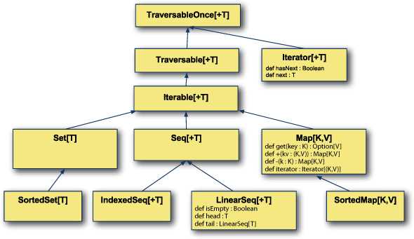
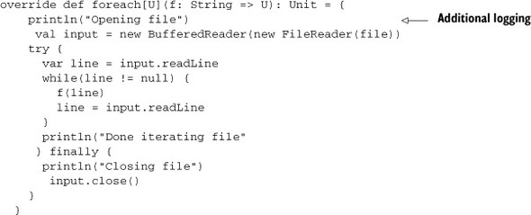
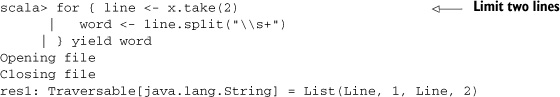
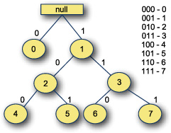
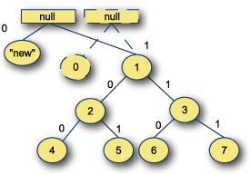
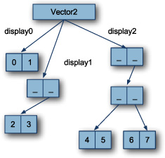
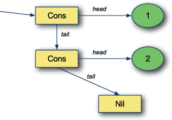
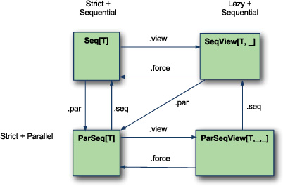
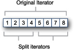
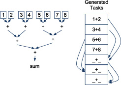

{% include JB/setup %}
{% raw %}
<div>

<div class="calibre5"></div><h2 class="chapter" id="ch08">Chapter 8. <a id="ch08__title" class="calibre6"></a>Using the right collection
      </h2>
      <p class="calibre2"> </p><table cellspacing="5" width="100%" border="1" class="calibre10"><colgroup class="calibre19"><col width="550" class="calibre12"/></colgroup><tbody class="calibre13"><tr class="calibre14"><td class="calibre20"/>
            </tr></tbody></table><div class="calibre4">
         
         <b id="ch08sb01" class="calibre21">In this chapter</b>
         
         <p class="calibre22"></p>
         <ul class="calibre23"><li class="calibre24">Determining the appropriate collection for an algorithm</li>
            
            <li class="calibre24">Descriptions of immutable collection types</li>
            
            <li class="calibre24">Descriptions of mutable collection types</li>
            
            <li class="calibre24">Changing the execution semantics of a collection from strict to lazy and back</li>
            
            <li class="calibre24">Changing the execution semantics of a collection from sequential to parallel and back</li>
            
            <li class="calibre24">Writing methods for all collection types</li>
            
         </ul></div>
      <table cellspacing="5" width="100%" border="1" class="calibre10"><colgroup class="calibre19"><col width="550" class="calibre12"/></colgroup><tbody class="calibre13"><tr class="calibre14"><td class="calibre20"/>
            </tr></tbody></table><p class="calibre2"> </p><p class="noind">The Scala collections library is the single most impressive library in the Scala ecosystem. It’s used in every project and
         provides myriad utility functions. The Scala collections provide many ways of storing and manipulating data, which can be
         overwhelming. Because most of the methods defined on Scala collections are available on every collection, it’s important to
         know what the collection types imply in terms of performance and usage patterns.
      </p>
      
      <p class="noind">Scala’s collections also split into three dichotomies:</p>
      
      <p class="calibre22"></p>
      <ul class="calibre23"><li class="calibre24">Immutable and mutable collections</li>
         
         <li class="calibre24">Eager and delayed evaluation</li>
         
         <li class="calibre24">Sequential and parallel evaluation</li>
         
      </ul><p class="noind"><a id="iddle1026" class="calibre25"></a><a id="iddle1030" class="calibre25"></a><a id="iddle1172" class="calibre25"></a><a id="iddle1176" class="calibre25"></a><a id="iddle1199" class="calibre25"></a><a id="iddle1454" class="calibre25"></a><a id="iddle1853" class="calibre25"></a><a id="iddle1855" class="calibre25"></a><a id="iddle2041" class="calibre25"></a><a id="iddle2044" class="calibre25"></a>Each of these six categories can be useful. Sometimes parallel execution can drastically improve throughput, and sometimes
         delaying the evaluation of a method can improve performance. The Scala collections library provides the means for developers
         to choose the attributes their collections should have. We’ll discuss these in <a href="#ch08lev1sec2" class="calibre7">sections 8.2</a> through <a href="#ch08lev1sec4" class="calibre7">8.4</a></p>
      
      <p class="noind">The biggest difficulty with all the new power from the collections library is working generically across collections. We discuss
         a technique to handle this in <a href="#ch08lev1sec5" class="calibre7">section 8.5</a>.
      </p>
      
      <p class="noind">Let’s look at the key concepts in the Scala collection library and when to use each.</p>
      
      
      <h3 id="ch08lev1sec1" class="calibre17"><a id="ch08lev1sec1__title" class="calibre6"></a>8.1. Use the right collection
      </h3>
      
      <p class="noind">With all the new choices in the Scala collections library, choosing the right collection is important. Each collection has
         different runtime characteristics and is suited for different styles of algorithms. For example, Scala’s <kbd class="calibre18">List</kbd> collection is a single linked-list and is suited for recursive algorithms that operate by splitting the head off the rest
         of the collection. In contrast, Scala’s <kbd class="calibre18">Vector</kbd> class is implemented as a set of nested arrays that’s efficient at splitting and joining. The key to utilizing the Scala
         collections library is knowing what the types convey.
      </p>
      
      <p class="noind">In Scala, there are two places to worry about collection types: creating generic methods that work against multiple collections
         and choosing a collection for a datatype.
      </p>
      
      <p class="noind">Creating generic methods that work across collection types is all about selecting the lowest possible collection type that
         keeps the generic method performant, but isn’t so high up the collections hierarchy that it can’t be used for lots of different
         collections. In fact, the type-system tricks we discuss in <a href="kindle_split_015.html#ch07lev1sec3" class="calibre7">section 7.3</a> can allow you to use type-specialized optimizations generically. We’ll show this technique in <a href="#ch08lev1sec5" class="calibre7">section 8.5</a>.
      </p>
      
      <p class="noind">Choosing a collection for a datatype is done by instantiating the right collection type for the use case of the data. For
         example, the <kbd class="calibre18">scala.collection.immutable.List</kbd> class is ideal for recursive algorithms that split collections by head and tail. The <kbd class="calibre18">scala.collection.immutable.Vector</kbd> collection is suited toward most general purpose algorithms, due to its efficient indexing and its ability to share much
         of its internal structure when using methods like <kbd class="calibre18">+:</kbd> and <kbd class="calibre18">++</kbd>. We’ll show this technique in <a href="#ch08lev1sec3" class="calibre7">section 8.3</a>.
      </p>
      
      <p class="noind">The core abstractions in the collections library illustrate different styles of collections.</p>
      
      
      <h4 id="ch08lev2sec1" class="calibre28">8.1.1. <a id="ch08lev2sec1__title" class="calibre25"></a>The collection hierarchy
      </h4>
      
      <p class="noind">The Scala collection hierarchy is rich in depth. Each level in the hierarchy represents a new set of abstract functions that
         can be implemented to define a new collection or add performance goals onto the parent class. The collections hierarchy starts
         with the <kbd class="calibre18">Traversable</kbd> abstraction and works it way toward <kbd class="calibre18">Map</kbd>, <kbd class="calibre18">Set</kbd>, and <kbd class="calibre18">IndexedSequence</kbd> abstractions. Let’s look at the abstract hierarchy of the collections library.
      </p>
      
      <p class="noind">Let’s look at the collections hierarchy in <a href="#ch08fig01" class="calibre7">figure 8.1</a>.
      </p>
      
      
      
      <h5 class="notetitle" id="ch08fig01">Figure 8.1. <a id="ch08fig01__title" class="calibre25"></a>Generic collections hierarchy
      </h5>
      
      <p class="center1"></p>
      
      
      <p class="noind">The collections hierarchy starts with the trait <kbd class="calibre18">TraversableOnce</kbd>. This trait represents a collection that can be traversed at least once. This trait abstracts between <a id="iddle1415" class="calibre25"></a><a id="iddle1416" class="calibre25"></a><a id="iddle1417" class="calibre25"></a><a id="iddle1547" class="calibre25"></a><a id="iddle1553" class="calibre25"></a><kbd class="calibre18">Traversable</kbd> and <kbd class="calibre18">Iterator</kbd>. An <kbd class="calibre18">Iterator</kbd> is a stream of incoming items where advancing to the next item consumes the current item. A <kbd class="calibre18">Traversable</kbd> represents a collection that defines a mechanism to traverse the entire collection but can be traversed repeatedly. The <kbd class="calibre18">Iterable</kbd> trait is similar to <kbd class="calibre18">Traversable</kbd> but allows the repeated creation of an <kbd class="calibre18">Iterator</kbd>. The hierarchy branches out into sequences, maps (also known as <i class="calibre9">dictionaries</i>), and sets.
      </p>
      <p class="calibre2"> </p><table cellspacing="5" width="100%" border="1" class="calibre10"><colgroup class="calibre19"><col width="550" class="calibre12"/></colgroup><tbody class="calibre13"><tr class="calibre14"><td class="calibre20"/>
            </tr></tbody></table><div class="calibre4">
         
         <b id="ch08sb02" class="calibre21">A rich set of collections</b>
         
         <p class="noind">The Scala collections library is rich in choices. It provides a core set of abstractions for collections. This set is branched
            into several dichotomies:
         </p>
         
         <p class="calibre22"></p>
         <ul class="calibre23"><li class="calibre24">Sequential versus parallel</li>
            
            <li class="calibre24">Eager evaluation versus lazy evaluation</li>
            
            <li class="calibre24">Immutable versus mutable collections</li>
            
         </ul><p class="noind">The core set of abstractions has variants that allow one or more of these differentiators to be true.</p>
         
      </div>
      <table cellspacing="5" width="100%" border="1" class="calibre10"><colgroup class="calibre19"><col width="550" class="calibre12"/></colgroup><tbody class="calibre13"><tr class="calibre14"><td class="calibre20"/>
            </tr></tbody></table><p class="calibre2"> </p><p class="calibre2"> </p><table cellspacing="5" width="100%" border="1" class="calibre10"><colgroup class="calibre19"><col width="550" class="calibre12"/></colgroup><tbody class="calibre13"><tr class="calibre14"><td class="calibre20"/>
            </tr></tbody></table><h5 class="notetitle" id="ch08note01">The Gen* Traits</h5>
      
      
      <p class="noindclose">In reality, the collection hierarchy has a duplicate generic variant. Every trait in the hierarchy has a <kbd class="calibre18">Gen*</kbd> trait that it inherits from, such as <kbd class="calibre18">GenTraversableOnce</kbd>, <kbd class="calibre18">GenIterator</kbd>, and <kbd class="calibre18">GenSeq</kbd>. The generic variants of collections offer no guarantees on serial or parallel execution, while the traits discussed here
         enforce sequential execution. The principles behind each collection are the same, but traversal ordering isn’t guaranteed
         for parallel collections. We discuss parallel collections in detail in <a href="#ch08lev2sec16" class="calibre7">section 8.4.2</a>.
      </p>
      
      <table cellspacing="5" width="100%" border="1" class="calibre10"><colgroup class="calibre19"><col width="550" class="calibre12"/></colgroup><tbody class="calibre13"><tr class="calibre14"><td class="calibre20"/>
            </tr></tbody></table><p class="calibre2"> </p><p class="noind">Let’s look at when to use each of the collection types.</p>
      
      
      
      
      <h4 id="ch08lev2sec2" class="calibre28">8.1.2. <a id="ch08lev2sec2__title" class="calibre25"></a>Traversable
      </h4>
      
      <p class="noind"><a id="iddle1198" class="calibre25"></a><a id="iddle1375" class="calibre25"></a>The <kbd class="calibre18">Traversable</kbd> trait is defined in terms of the <kbd class="calibre18">foreach</kbd> method. This method is an internal iterator—that is, the <kbd class="calibre18">foreach</kbd> method takes a function that operates on a single element of the collection and applies it to every element of the collection.
         Traversable collections don’t provide any way to stop traversing inside the <kbd class="calibre18">foreach</kbd>. To make certain operations efficient, the library uses preinitialized exceptions to break out of the iteration early and
         prevent wasted cycles. This technique is somewhat efficient on the JVM, but some simple algorithms will suffer greatly. The
         index operation, for example, has complexity <i class="calibre9">O(n)</i> for <kbd class="calibre18">Traversable</kbd>.
      </p>
      <p class="calibre2"> </p><table cellspacing="5" width="100%" border="1" class="calibre10"><colgroup class="calibre19"><col width="550" class="calibre12"/></colgroup><tbody class="calibre13"><tr class="calibre14"><td class="calibre20"/>
            </tr></tbody></table><div class="calibre4">
         
         <b id="ch08sb03" class="calibre21">Internal versus external iterators</b>
         
         <p class="noind">Iterators can either be internal or external. An internal iterator is one where the collection or owner of the iterator is
            responsible for walking it through the collection. An external iterator is one where the client code can decide when and how
            to iterate.
         </p>
         
         <p class="noind">Scala supports both types of iterators with the <kbd class="calibre18">Traversable</kbd> and <kbd class="calibre18">Iterable</kbd> types. The <kbd class="calibre18">Traversable</kbd> trait provides the <kbd class="calibre18">foreach</kbd> method for iteration, where a client will pass a function for the collection to use when iterating. The <kbd class="calibre18">Iterable</kbd> trait provides an iterator method, where a client can obtain an iterator and use it to walk through the collection.
         </p>
         
         <p class="noind">Scala also defines <kbd class="calibre18">Iterable</kbd> as a subclass of <kbd class="calibre18">Traversable</kbd>. The downside is that any collections that only support internal iterators must extend <kbd class="calibre18">Traversable</kbd> and nothing else.
         </p>
         
      </div>
      <table cellspacing="5" width="100%" border="1" class="calibre10"><colgroup class="calibre19"><col width="550" class="calibre12"/></colgroup><tbody class="calibre13"><tr class="calibre14"><td class="calibre20"/>
            </tr></tbody></table><p class="calibre2"> </p><p class="noind">When using <kbd class="calibre18">Traversable</kbd>s, it’s best to utilize operations that traverse the entire collection, such as <kbd class="calibre18">filter</kbd>, <kbd class="calibre18">map</kbd>, and <kbd class="calibre18">flatMap</kbd>. <kbd class="calibre18">Traversable</kbd>s aren’t often seen in day-to-day development, but when they are, it’s common to convert them into another sort of collection
         for processing. For example, we’ll define a <kbd class="calibre18">Traversable</kbd> that opens a file and reads its lines for every traversal.
      </p>
      
      <pre id="PLd0e20138" class="calibre8">class FileLineTraversable(file: File) extends Traversable[String] {
  override def foreach[U](f: String =&gt; U) : Unit = {
    val input = new BufferedReader(new FileReader(file))
    try {
      var line = input.readLine
      while(line != null) {
        f(line)
        line = input.readLine
      }
    } finally {
      input.close()
    }
  }
  override def toString =
    "{Lines of " + file.getAbsolutePath + "}"
}</pre>
      
      <p class="noind"><a id="iddle1325" class="calibre25"></a><a id="iddle1869" class="calibre25"></a><a id="iddle2015" class="calibre25"></a><a id="iddle2039" class="calibre25"></a>The <kbd class="calibre18">FileLineTraversable</kbd> class takes a file in its constructor and extends the <kbd class="calibre18">Traversable</kbd> trait for <kbd class="calibre18">String</kbd>s. The <kbd class="calibre18">foreach</kbd> method is overridden to open the file and read lines from the file. The lines are passed into the function <kbd class="calibre18">f</kbd>. The method uses a <kbd class="calibre18">try-finally</kbd> block to ensure the file is closed after iteration. This implementation means that every time the collection is traversed,
         the file is opened and all of its contents are enumerated. Finally, the <kbd class="calibre18">toString</kbd> method is overridden so that when it’s called within the REPL, the entire file’s contents aren’t enumerated. Let’s use this
         class.
      </p>
      
      <pre id="PLd0e20189" class="calibre8">scala&gt; val x = new FileLineTraversable(new java.io.File("test.txt"))
x: FileLineTraversable = {Lines of
/home/.../chapter8/collections-examples/test.txt}

scala&gt; for { line &lt;- x
     |   word &lt;- line.split("\\s+")
     | } yield word
res0: Traversable[java.lang.String] =
  List(Line, 1, Line, 2, Line, 3,
       Line, 4, Line, 5, ")</pre>
      
      <p class="noind">The first line constructs a <kbd class="calibre18">FileLineTraversable</kbd> against the <kbd class="calibre18">test.txt</kbd> file. This sample file contains lines that look like the following <kbd class="calibre18">Line 1</kbd>. The second line iterates over all the lines in the file and splits this line into words before constructing a new list with
         the words. The result is another <kbd class="calibre18">Traversable</kbd> of <kbd class="calibre18">String</kbd> that has all the individual words of the file.
      </p>
      
      <p class="noind">The return type is <kbd class="calibre18">Traversable</kbd> even though the runtime type of the resulting list of words is a <kbd class="calibre18">scala.List</kbd>. The starting type in the <kbd class="calibre18">for</kbd> expression was a <kbd class="calibre18">Traversable</kbd>, so the resulting type of the expression will also be a <kbd class="calibre18">Traversable</kbd> without any outside intervention.
      </p>
      
      <p class="noind">One concern with using the <kbd class="calibre18">FileLineTraversable</kbd> class is that the <i class="calibre9">entire</i> file would have to be traversed for any operation on the collection. Although we can’t create efficient random element access,
         the traversable <kbd class="calibre18">can</kbd> be terminated early if necessary. Let’s modify the definition of <kbd class="calibre18">FileLineTraversable</kbd> to include logging statements.
      </p>
      
      
      <p class="center1"></p>
      
      
      <p class="noind"><a id="iddle1881" class="calibre25"></a><a id="iddle2003" class="calibre25"></a>The <kbd class="calibre18">foreach</kbd> method has been modified with logging statements in three places: The first is when the file is opened, the second is when
         the file has reached its termination state, and the third is when the file is closed. Let’s see what happens with a previous
         example usage:
      </p>
      
      <pre id="PLd0e20271" class="calibre8">scala&gt; val x = new FileLineTraversable(new java.io.File("test.txt"))
x: FileLineTraversable = {Lines of
  /home/.../scala-in-depth/chapter8/collections-examples/test.txt}

scala&gt; for { line &lt;- x
     |   word &lt;- line.split("\\s+")
     | } yield word
Opening file
Done iterating file
Closing file
res0: Traversable[java.lang.String] =
  List(Line, 1, Line, 2, Line, 3,
       Line, 4, Line, 5, ")</pre>
      
      <p class="noind">The <kbd class="calibre18">FileLineTraversable</kbd> is constructed the same as before. But now when trying to extract all the individual words, the logging statements are printed.
         The file is opened, the iteration is completed, and the file is closed. Now what happens if only the top two lines of the
         file need to be read?
      </p>
      
      
      <p class="center1"></p>
      
      
      <p class="noind">This time the <kbd class="calibre18">take</kbd> method is called against the <kbd class="calibre18">FileLineTraversable</kbd>. The <kbd class="calibre18">take</kbd> method is used to limit a collection to the first <kbd class="calibre18">n</kbd> elements, or in this case the first two elements. Now when extracting the lines of the file, the <kbd class="calibre18">Opening file</kbd> and <kbd class="calibre18">Closing file</kbd> logging statements print, but not the <kbd class="calibre18">Done iterating file</kbd> statement. This is because the <kbd class="calibre18">Traversable</kbd> class has an efficient means of terminating <kbd class="calibre18">foreach</kbd> early when necessary. We do this by throwing a <kbd class="calibre18">scala.util.control.ControlThrowable</kbd>. This preallocated exception can be efficiently thrown and caught on the JVM.
      </p>
      <p class="calibre2"> </p><table cellspacing="5" width="100%" border="1" class="calibre10"><colgroup class="calibre19"><col width="550" class="calibre12"/></colgroup><tbody class="calibre13"><tr class="calibre14"><td class="calibre20"/>
            </tr></tbody></table><div class="calibre4">
         
         <b id="ch08sb04" class="calibre21">Carefully catching exceptions</b>
         
         <p class="noind">In Scala, some control flows, such as nonlocal closure returns and break statements, are encoded using subclasses of the <kbd class="calibre18">scala.util.control.ControlThrowable</kbd>. Due to JVM optimizations, this leads to an efficient implementation but requires Scala users to practice restraint in capturing
            <kbd class="calibre18">Exception</kbd>s. For example, instead of catching all throwables, when using Scala you should make sure to <kbd class="calibre18">rethrow ControlThrowable</kbd> exceptions.
         </p>
         
         <pre id="PLd0e20341" class="calibre8">try { ... } catch {
 case ce : ControlThrowable =&gt; throw ce
 case t : Throwable =&gt; ...
}</pre>
         
         <p class="noind">It’s usually considered bad practice to catch <kbd class="calibre18">Throwable</kbd> instead of <kbd class="calibre18">Exception</kbd>. In Scala, if you must catch <kbd class="calibre18">Throwable</kbd> make sure to rethrow <kbd class="calibre18">ControlThrowable.</kbd></p>
         
      </div>
      <table cellspacing="5" width="100%" border="1" class="calibre10"><colgroup class="calibre19"><col width="550" class="calibre12"/></colgroup><tbody class="calibre13"><tr class="calibre14"><td class="calibre20"/>
            </tr></tbody></table><p class="calibre2"> </p><p class="noind"><a id="iddle1182" class="calibre25"></a><a id="iddle1183" class="calibre25"></a><a id="iddle1441" class="calibre25"></a><a id="iddle1548" class="calibre25"></a><a id="iddle1554" class="calibre25"></a><a id="iddle1692" class="calibre25"></a>The downside to this approach is that the <kbd class="calibre18">take</kbd> method will read three lines of the file before the exception is thrown to prevent continued iteration.
      </p>
      
      <p class="noind"><kbd class="calibre18">Traversable</kbd> is one of the most abstract and powerful traits in the collections hierarchy. The <kbd class="calibre18">foreach</kbd> method is the easiest method to implement for any collection type, but it’s suboptimal for many algorithms. It doesn’t support
         random access efficiently and it requires one extra iteration when attempting to terminate traversal early. The next collection
         type, <kbd class="calibre18">Iterable</kbd>, solves the latter point by using an external iterator.
      </p>
      
      
      
      <h4 id="ch08lev2sec3" class="calibre28">8.1.3. <a id="ch08lev2sec3__title" class="calibre25"></a>Iterable
      </h4>
      
      <p class="noind">The <kbd class="calibre18">Iterable</kbd> trait is defined in terms of the <kbd class="calibre18">iterator</kbd> method. This returns an external iterator that you can use to walk through the items in the collection. This class improves
         slightly on <kbd class="calibre18">Traversable</kbd> performance by allowing methods that need to parse a portion of the collection <kbd class="calibre18">stop</kbd> sooner than <kbd class="calibre18">Traversable</kbd> would allow.
      </p>
      
      <p class="noind">External iterators are objects you can use to iterate the internals of another object. The <kbd class="calibre18">Iterable</kbd> trait’s <kbd class="calibre18">iterator</kbd> method returns an external iterator of type <kbd class="calibre18">Iterator</kbd>. The <kbd class="calibre18">Iterator</kbd> supports two methods, <kbd class="calibre18">hasNext</kbd> and <kbd class="calibre18">next</kbd>. The <kbd class="calibre18">hasNext</kbd> method returns true if there are more elements in the collection and returns false otherwise. The <kbd class="calibre18">next</kbd> method returns the next element in the collection or throws an exception if there are none left.
      </p>
      
      <p class="noind">One of the downsides to having an external iterator is that collections such as the <kbd class="calibre18">FileLineTraversable</kbd> are hard to implement. The traversal of the collection is external to the collection itself, so the <kbd class="calibre18">FileLineTraversable</kbd> needs to know when all iterators are completed or no longer used before it can clean up memory/resources. In the worst case,
         the file may remain open for the entire life of an application. Because of this issue, subclasses of <kbd class="calibre18">Iterable</kbd> tend to be standard collections.
      </p>
      
      <p class="noind">The major benefit of the <kbd class="calibre18">Iterable</kbd> interface is the ability to coiterate two collections efficiently. For example, let’s imagine that there are two lists. The
         first is a list of names and the second is a list of addresses. We can use the <kbd class="calibre18">Iterable</kbd> interface to iterate through both lists at the same time efficiently.
      </p>
      
      <pre id="PLd0e20488" class="calibre8">scala&gt; val names = Iterable("Josh", "Jim")
names: Iterable[java.lang.String] = List(Josh, Jim)

scala&gt; val address = Iterable("123 Anyroad, Anytown St 11111",
                                "125 Anyroad, Anytown St 11111")
address: Iterable[java.lang.String] =
  List(123 Anyroad, Anytown St 11111, 125 Anyroad, Anytown St 11111)

scala&gt; val n = names.iterator
n: Iterator[java.lang.String] = non-empty iterator

scala&gt; val a = address.iterator
a: Iterator[java.lang.String] = non-empty iterator

scala&gt; while(n.hasNext &amp;&amp; a.hasNext) {
     |   println(n.next + " lives at " + a.next)
     | }
Josh lives at 123 Anyroad, Anytown St 11111
Jim lives at 125 Anyroad, Anytown St 11111</pre>
      
      <p class="noind"><a id="iddle1101" class="calibre25"></a><a id="iddle1575" class="calibre25"></a><a id="iddle1790" class="calibre25"></a><a id="iddle2150" class="calibre25"></a>The first line constructs an <kbd class="calibre18">Iterable</kbd> of name strings. The second line constructs an <kbd class="calibre18">Iterable</kbd> of address strings. The value <kbd class="calibre18">n</kbd> is created as an external iterator on the name strings. The value <kbd class="calibre18">a</kbd> is created as an external iterator on the address strings. The while loop iterates over both the <kbd class="calibre18">a</kbd> and <kbd class="calibre18">n</kbd> iterators simultaneously.
      </p>
      <p class="calibre2"> </p><table cellspacing="5" width="100%" border="1" class="calibre10"><colgroup class="calibre19"><col width="550" class="calibre12"/></colgroup><tbody class="calibre13"><tr class="calibre14"><td class="calibre20"/>
            </tr></tbody></table><div class="calibre4">
         
         <b id="ch08sb05" class="calibre21">Zipping collection</b>
         
         <p class="noind">Scala defines a <kbd class="calibre18">zip</kbd> method that will convert two collections into a single collection of pairs. The coiteration program is equivalent to this
            line of Scala:
         </p>
         
         <pre id="PLd0e20548" class="calibre8">names.iterator zip address.iterator map { case (n, a) =&gt; n+" lives at
            "+a } foreach println</pre>
         
         <p class="noind">The <kbd class="calibre18">zip</kbd> method is used against names and addresses. The <kbd class="calibre18">map</kbd> method deconstructs the pairs and constructs the statement &lt;<kbd class="calibre18">name&gt; lives at &lt;address&gt;</kbd>”. Finally, the statements are sent to the console using the <kbd class="calibre18">println</kbd> method.
         </p>
         
      </div>
      <table cellspacing="5" width="100%" border="1" class="calibre10"><colgroup class="calibre19"><col width="550" class="calibre12"/></colgroup><tbody class="calibre13"><tr class="calibre14"><td class="calibre20"/>
            </tr></tbody></table><p class="calibre2"> </p><p class="noind">When joining information between two collections, requiring the <kbd class="calibre18">Iterable</kbd> trait can greatly improve the efficiency of the operation. But we still have an issue with using external iterators on mutable
         collections. The collection could change without the external iterator being aware of the change:
      </p>
      
      <pre id="PLd0e20576" class="calibre8">scala&gt; val x = collection.mutable.ArrayBuffer(1,2,3)
x: scala.collection.mutable.ArrayBuffer[Int] = ArrayBuffer(1, 2, 3)

scala&gt; val i = x.iterator
i: Iterator[Int] = non-empty iterator</pre>
      
      <p class="noind">The first line constructs a new <kbd class="calibre18">ArrayBuffer</kbd> collection (a mutable collection that extends from <kbd class="calibre18">Iterable</kbd>) with the elements <kbd class="calibre18">1</kbd>, <kbd class="calibre18">2</kbd>, and <kbd class="calibre18">3</kbd>. Next, the value <kbd class="calibre18">i</kbd> is constructed as an iterator over the array. Now let’s remove all the elements from the mutable structure and see what happens
         to the <kbd class="calibre18">i</kbd> instance:
      </p>
      
      <pre id="PLd0e20606" class="calibre8">scala&gt; x.remove(0,3)

scala&gt; i.hasNext
res3: Boolean = true
scala&gt; i.next
java.lang.IndexOutOfBoundsException: 0
...</pre>
      
      <p class="noind">The first line is a call to <kbd class="calibre18">remove</kbd>. This will remove all elements in the collection. The second line calls <kbd class="calibre18">hasNext</kbd> on the iterator. Because the iterator is external, it isn’t aware that the underlying collection has changed and returns
         true, implying there’s a next element. The next line calls the <kbd class="calibre18">next</kbd> method, which throws a <kbd class="calibre18">java.lang.Index-OutOfBoundsException</kbd>.
      </p>
      
      <p class="noind">We should use the <kbd class="calibre18">Iterable</kbd> trait when explicit external iteration is required for a collection, but random access isn’t required.
      </p>
      
      
      
      
      <h4 id="ch08lev2sec4" class="calibre28">8.1.4. <a id="ch08lev2sec4__title" class="calibre25"></a>Seq
      </h4>
      
      <p class="noind"><a id="iddle1094" class="calibre25"></a><a id="iddle1184" class="calibre25"></a><a id="iddle1194" class="calibre25"></a><a id="iddle1331" class="calibre25"></a><a id="iddle1444" class="calibre25"></a><a id="iddle1518" class="calibre25"></a><a id="iddle1544" class="calibre25"></a><a id="iddle1620" class="calibre25"></a><a id="iddle1980" class="calibre25"></a><a id="iddle2000" class="calibre25"></a><a id="iddle2004" class="calibre25"></a>The <kbd class="calibre18">Seq</kbd> trait is defined in terms of the <kbd class="calibre18">length</kbd> and <kbd class="calibre18">apply</kbd> method. It represents collections that have a sequential ordering. We can use the <kbd class="calibre18">apply</kbd> method to index into the collection by its ordering. The <kbd class="calibre18">length</kbd> method returns the size of the collection. The <kbd class="calibre18">Seq</kbd> trait offers no guarantees on performance of the indexing or length methods. We should use the <kbd class="calibre18">Seq</kbd> trait only to differentiate <kbd class="calibre18">Sets</kbd> and <kbd class="calibre18">Maps</kbd> from sequential collections—that is, if the order in which things are placed into a collections is important and duplicates
         should be allowed, then the <kbd class="calibre18">Seq</kbd> trait should be required.
      </p>
      
      <p class="noind">A good example of when to use a <kbd class="calibre18">Sequence</kbd> is when working with sampled data, such as audio. Audio data is recorded at a sampling rate and the order in which it occurs
         is important in processing that data. Using the <kbd class="calibre18">Seq</kbd> trait allows the computation of sliding windows. Let’s instantiate some data and compute the sum of elements in sliding windows
         over the data.
      </p>
      
      <pre id="PLd0e20744" class="calibre8">scala&gt; val x = Seq(2,1,30,-2,20,1,2,0)
x: Seq[Int] = List(2, 1, 30, -2, 20, 1, 2, 0)

scala&gt; x.tails map (_.take(2)) filter (_.length &gt; 1) map (_.sum) toList
res24: List[Int] = List(3, 31, 28, 18, 21, 3, 2)</pre>
      
      <p class="noind">The first line constructs an example input audio sequence. The second line computes the sum of sliding windows. The sliding
         windows are created using the <kbd class="calibre18">tails</kbd> method. The <kbd class="calibre18">tails</kbd> method returns an iterator over the tail of an existing collection. This means, each successive collection in the <kbd class="calibre18">tails</kbd> iterator has one less element. These collections can be converted into sliding windows using the <kbd class="calibre18">take</kbd> method, which ensures only <kbd class="calibre18">N</kbd> elements exist (in this case two). Next, we use the <kbd class="calibre18">filter</kbd> method to remove windows that are less than the desired size. Finally, the <kbd class="calibre18">sum</kbd> method is called on these windows and the resulting collection is converted to a list.
      </p>
      <p class="calibre2"> </p><table cellspacing="5" width="100%" border="1" class="calibre10"><colgroup class="calibre19"><col width="550" class="calibre12"/></colgroup><tbody class="calibre13"><tr class="calibre14"><td class="calibre20"/>
            </tr></tbody></table><div class="calibre4">
         
         <b id="ch08sb06" class="calibre21">The sliding method</b>
         
         <p class="noind">Scala defines a sliding method on collections that can be used rather than the <kbd class="calibre18">tails</kbd> method. The preceding example could be rewritten as follows:
         </p>
         
         <pre id="PLd0e20785" class="calibre8">scala&gt; Seq(2,1,30,-2,20,1,2,0).sliding(2).map(_.sum).toList
res0: List[Int] = List(3, 31, 28, 18, 21, 3, 2)</pre>
         
         </div>
      <table cellspacing="5" width="100%" border="1" class="calibre10"><colgroup class="calibre19"><col width="550" class="calibre12"/></colgroup><tbody class="calibre13"><tr class="calibre14"><td class="calibre20"/>
            </tr></tbody></table><p class="calibre2"> </p><p class="noind">Sequence tends to be used frequently in abstract methods when the algorithms are usually targeted at one of its two subclasses:
         <kbd class="calibre18">LinearSeq</kbd> and <kbd class="calibre18">IndexedSeq</kbd>. We prefer these where applicable. Let’s look at <kbd class="calibre18">LinearSeq</kbd> first.
      </p>
      
      
      
      <h4 id="ch08lev2sec5" class="calibre28">8.1.5. <a id="ch08lev2sec5__title" class="calibre25"></a>LinearSeq
      </h4>
      
      <p class="noind">The <kbd class="calibre18">LinearSeq</kbd> trait is used to denote that a collection can be split into a <kbd class="calibre18">head</kbd> and <kbd class="calibre18">tail</kbd> component. The trait is defined in terms of three “assumed to be efficient” abstract methods: <kbd class="calibre18">isEmpty</kbd>, <kbd class="calibre18">head</kbd>, and <kbd class="calibre18">tail</kbd>. The <kbd class="calibre18">isEmpty</kbd> method returns true if the collection is empty. The <kbd class="calibre18">head</kbd> method returns the first element of the collection if the <a id="iddle1120" class="calibre25"></a><a id="iddle1128" class="calibre25"></a><a id="iddle1614" class="calibre25"></a><a id="iddle1697" class="calibre25"></a><a id="iddle2049" class="calibre25"></a><a id="iddle2050" class="calibre25"></a>collection isn’t empty. The <kbd class="calibre18">tail</kbd> method returns the entire collection minus the head. This type of collection is ideal for tail recursive algorithms that
         split collections by their head.
      </p>
      
      <p class="noind">The canonical example of a <kbd class="calibre18">LinearSeq</kbd> is a <kbd class="calibre18">Stack</kbd>. A <kbd class="calibre18">Stack</kbd> is a collection that operates like a stack of toys. It’s easy to get the last toy placed on the stack, but it could be frustrating
         to continually remove toys to reach the bottom of the stack. A <kbd class="calibre18">LinearSeq</kbd> is similar in that it can be decomposed into the head (or top) element and the rest of the collection.
      </p>
      
      <p class="noind">Let’s look at how we can use a <kbd class="calibre18">LinearSeq</kbd> as a stack in a tree traversal algorithm. First, let’s define a binary tree datatype.
      </p>
      
      <pre id="PLd0e20893" class="calibre8">sealed trait BinaryTree[+A]
case object NilTree extends BinaryTree[Nothing]
case class Branch[+A](value: A,
                      lhs: BinaryTree[A],
                      rhs: BinaryTree[A]) extends BinaryTree[A]
case class Leaf[+A](value: A) extends BinaryTree[A]</pre>
      
      <p class="noind">The trait <kbd class="calibre18">BinaryTree</kbd> is defined as covariant on its type parameter <kbd class="calibre18">A</kbd>. It has no methods and is sealed to prevent subclasses outside of the current compilation unit. The object <kbd class="calibre18">NilTree</kbd> represents a completely empty tree. It’s defined with the type parameter specified to <kbd class="calibre18">Nothing</kbd>, which allows it to be used in any <kbd class="calibre18">BinaryTree</kbd>. The <kbd class="calibre18">Branch</kbd> class is defined such that it has a value and a left-hand tree and right-hand tree. Finally, the <kbd class="calibre18">Leaf</kbd> type is defined as a <kbd class="calibre18">BinaryTree</kbd> that contains only a value. Let’s define an algorithm to traverse this <kbd class="calibre18">BinaryTree</kbd>.
      </p>
      
      <pre id="PLd0e20929" class="calibre8">def traverse[A, U](t: BinaryTree[A])(f: A =&gt; U): Unit = {
    @annotation.tailrec
    def traverseHelper(current: BinaryTree[A],
                      next: LinearSeq[BinaryTree[A]]): Unit =
      current match {
        case Branch(value, lhs, rhs) =&gt;
          f(value)
          traverseHelper(lhs, rhs +: next)
        case Leaf(value) if !next.isEmpty =&gt;
          f(value)
          traverseHelper(next.head, next.tail)
        case Leaf(value) =&gt; f(value)
        case NilTree if !next.isEmpty =&gt;
          traverseHelper(next.head, next.tail)
        case NilTree =&gt; ()
      }
    traverseHelper(t, LinearSeq())
  }</pre>
      
      <p class="noind">The <kbd class="calibre18">traverse</kbd> method is defined to take a <kbd class="calibre18">BinaryTree</kbd> of content elements <kbd class="calibre18">A</kbd> and a function that operates on the contents and returns values of type <kbd class="calibre18">U</kbd>. The <kbd class="calibre18">traverse</kbd> method uses a nested helper method to implement the core of its functionality. The <kbd class="calibre18">traverseHelper</kbd> method is tail recursive and is used to iterate over all the elements in the tree. The <kbd class="calibre18">traverseHelper</kbd> method takes the current tree it’s iterating over and <a id="iddle1027" class="calibre25"></a><a id="iddle1181" class="calibre25"></a><a id="iddle1445" class="calibre25"></a><a id="iddle1519" class="calibre25"></a><a id="iddle1693" class="calibre25"></a><a id="iddle1791" class="calibre25"></a>a <kbd class="calibre18">nextLinearSeq</kbd>, which contains the elements of the binary tree that it should look at later.
      </p>
      
      <p class="noind">The <kbd class="calibre18">traverseHelper</kbd> method does a match against the current tree. If the current tree is a branch, it’ll send the value at the branch to the
         function <kbd class="calibre18">f</kbd> and then recursively call itself. When it does this recursive call, it passes the left-hand tree as the next node to look
         at and appends the right-hand tree to the <i class="calibre9">front</i> of the <kbd class="calibre18">LinearSeq</kbd> using the <kbd class="calibre18">+:</kbd> method. Appending the right-hand tree to the <kbd class="calibre18">LinearSeq</kbd> is a fast operation, usually <i class="calibre9">O(1)</i>, due to the requirements of the <kbd class="calibre18">LinearSeq</kbd> trait.
      </p>
      
      <p class="noind">If the <kbd class="calibre18">traverseHelper</kbd> method encounters a <kbd class="calibre18">Leaf</kbd>, the value is sent to the function <kbd class="calibre18">f</kbd>. But if the <kbd class="calibre18">next</kbd> stack isn’t empty, the stack is decomposed using the <kbd class="calibre18">head</kbd> and <kbd class="calibre18">tail</kbd> method. These methods are defined as efficient for the <kbd class="calibre18">LinearSeq</kbd>, usually <i class="calibre9">O(1)</i>. The <kbd class="calibre18">head</kbd> is passed into the <kbd class="calibre18">traverseHelper</kbd> method as the current tree and the tail is passed as the next stack.
      </p>
      
      <p class="noind">Finally, if the <kbd class="calibre18">traverseHelper</kbd> method encounters a <kbd class="calibre18">NilTree</kbd> it operates similarly to when it encounters a <kbd class="calibre18">Leaf</kbd>. Because a <kbd class="calibre18">NilTree</kbd> doesn’t contain data, only the recursive <kbd class="calibre18">traverseHelper</kbd> call is needed.
      </p>
      
      <p class="noind">Now, let’s construct a <kbd class="calibre18">BinaryTree</kbd> and see what traversal looks like:
      </p>
      
      <pre id="PLd0e21081" class="calibre8">scala&gt; Branch(1, Leaf(2), Branch(3, Leaf(4), NilTree))
res0: Branch[Int] = Branch(1,Leaf(2),Branch(3,Leaf(4),NilTree))

scala&gt; BinaryTree.traverse(res0)(println)
1
2
3
4</pre>
      
      <p class="noind">First, a <kbd class="calibre18">BinaryTree</kbd> is created with two branches and two leaves. Next the <kbd class="calibre18">Binary-Tree.traverse</kbd> method is called against the tree with the method <kbd class="calibre18">println</kbd> for traversal. The resulting output is each value printed in the expected order: 1, 2, 3, 4.
      </p>
      
      <p class="noind">This technique of manually creating a <kbd class="calibre18">Stack</kbd> on the <kbd class="calibre18">Heap</kbd> and deferring work onto it is a common practice when converting a general recursive algorithm into a tail recursive algorithm
         or an iterative algorithm. When using a functional style with tail recursion, the <kbd class="calibre18">LinearSeq</kbd> trait is the right collection to use. Let’s look at a similar collection, the <kbd class="calibre18">IndexedSeq</kbd>.
      </p>
      
      
      
      <h4 id="ch08lev2sec6" class="calibre28">8.1.6. <a id="ch08lev2sec6__title" class="calibre25"></a>IndexedSeq
      </h4>
      
      <p class="noind">The <kbd class="calibre18">IndexedSeq</kbd> trait is similar to the <kbd class="calibre18">Seq</kbd> trait except that it implies that random access of collection elements is efficient—that is, accessing elements of a collection
         should be constant or near constant. This collection type is ideal for most general-purpose algorithms that don’t involve
         head-tail decomposition. Let’s look at some of the random access methods and their utility.
      </p>
      
      <pre id="PLd0e21129" class="calibre8">scala&gt; val x = IndexedSeq(1, 2, 3)
x: IndexedSeq[Int] = Vector(1, 2, 3)

scala&gt; x.updated(1, 5)
res0: IndexedSeq[Int] = Vector(1, 5, 3)</pre>
      
      <p class="noind"><a id="iddle1036" class="calibre25"></a><a id="iddle1095" class="calibre25"></a><a id="iddle1123" class="calibre25"></a><a id="iddle1195" class="calibre25"></a><a id="iddle1318" class="calibre25"></a><a id="iddle1439" class="calibre25"></a><a id="iddle1739" class="calibre25"></a><a id="iddle2052" class="calibre25"></a>An <kbd class="calibre18">IndexedSeq</kbd> can be created using the <kbd class="calibre18">factory</kbd> method defined on the <kbd class="calibre18">IndexedSeq</kbd> object. By default, this will create an immutable <kbd class="calibre18">Vector</kbd>, described in <a href="#ch08lev2sec9" class="calibre7">section 8.2.1</a>. <kbd class="calibre18">IndexedSeq</kbd> collections have an updated method that takes an index and a new value and returns a new collection with the value at the
         index updated. In the preceding example, the value at index 1 is replaced with the integer 5.
      </p>
      
      <p class="noind">Indexing into an <kbd class="calibre18">IndexedSeq</kbd> is done with the <kbd class="calibre18">apply</kbd> method. In Scala, a call to an <kbd class="calibre18">apply</kbd> method can be abbreviated so that indexing looks like the following:
      </p>
      
      <pre id="PLd0e21213" class="calibre8">scala&gt; x(2)
res1: Int = 3</pre>
      
      <p class="noind">The expression <kbd class="calibre18">x(2)</kbd> is shorthand for <kbd class="calibre18">x.apply(2)</kbd>. The result of the expression is the value at index 2 of the collection <kbd class="calibre18">x</kbd>. In Scala, indexing into any type of collection, including arrays, is done with an <kbd class="calibre18">apply</kbd> method rather than specialized syntax.
      </p>
      
      <p class="noind">Sometimes it’s more important to check whether or not a collection contains a particular item than it is to retain ordering.
         The <kbd class="calibre18">Set</kbd> collection does this.
      </p>
      
      
      
      <h4 id="ch08lev2sec7" class="calibre28">8.1.7. <a id="ch08lev2sec7__title" class="calibre25"></a>Set
      </h4>
      
      <p class="noind">The <kbd class="calibre18">Set</kbd> trait denotes a collection where each element is unique, at least according to the <kbd class="calibre18">==</kbd> method. A <kbd class="calibre18">Set</kbd> is the ideal collection to use when testing for the existence of an element in a collection or to ensure there are no duplicates
         within a collection.
      </p>
      
      <p class="noind">Scala supports three types of immutable and mutable sets: <kbd class="calibre18">TreeSet</kbd>, <kbd class="calibre18">HashSet</kbd>, and <kbd class="calibre18">BitSet</kbd>.
      </p>
      
      <p class="noind">The <kbd class="calibre18">TreeSet</kbd> is implemented as a red black tree of elements. A red black tree is a data structure that attempts to remain balanced, preserving
         <i class="calibre9">O(log2n)</i> random access to elements. We find elements in the tree by checking the current node. If the current node is greater than
         the desired value, we check the left subbranch. If the current node is less than the desired value, then we check the right
         subbranch. If the elements are equal, then the appropriate node was found. To create a <kbd class="calibre18">TreeSet</kbd>, an implicit <kbd class="calibre18">Ordering</kbd> type class is required so that the less than and greater than comparisons can be performed.
      </p>
      
      <p class="noind">The <kbd class="calibre18">HashSet</kbd> collection is also implemented as a tree of elements. The biggest difference is that the <kbd class="calibre18">HashSet</kbd> uses the hash of a value to determine which node in the tree to place an element. This means that elements that have the
         same hash value are located at the same tree node. If the hashing algorithm has a low chance of collision, <kbd class="calibre18">HashSet</kbd>s generally outperform <kbd class="calibre18">TreeSet</kbd>s for lookup speed.
      </p>
      
      <p class="noind">The <kbd class="calibre18">BitSet</kbd> collection is implemented as a sequence of <kbd class="calibre18">Long</kbd> values. The <kbd class="calibre18">BitSet</kbd> collection can store only integer values. A <kbd class="calibre18">BitSet</kbd> stores an integer value by setting the bit corresponding to that value to <kbd class="calibre18">true</kbd> in the underlying <kbd class="calibre18">Long</kbd> value. <kbd class="calibre18">BitSet</kbd>s are often used to efficiently track and store in memory a large set of flags.
      </p>
      
      <p class="noind">One of the features of <kbd class="calibre18">Set</kbd>s in Scala is that they extend from the type <kbd class="calibre18">(A) =&gt; Boolean</kbd>—that is, a <kbd class="calibre18">Set</kbd> can be used as a filtering function. Let’s look at mechanisms to limit the values in one collection by another.
      </p>
      
      
      <pre id="PLd0e21338" class="calibre8">scala&gt; (1 to 100) filter (2 to 4).toSet
res6: scala.collection.immutable.IndexedSeq[Int] = Vector(2, 3, 4)</pre>
      
      <p class="noind"><a id="iddle1186" class="calibre25"></a><a id="iddle1332" class="calibre25"></a><a id="iddle1437" class="calibre25"></a><a id="iddle1875" class="calibre25"></a><a id="iddle2032" class="calibre25"></a><a id="iddle2051" class="calibre25"></a>The range of numbers from 1 to 100 is filtered by the <kbd class="calibre18">Set</kbd> of numbers from 2 to 4. Note that any collection can be converted into a set (with some cost) using the <kbd class="calibre18">toSet</kbd> method. Because a <kbd class="calibre18">Set</kbd> is also a filtering function, it can be passed directly to the <kbd class="calibre18">filter</kbd> function on the range. The result is that only the numbers 2 through 4 are found in the result of the <kbd class="calibre18">filter</kbd> call.
      </p>
      
      <p class="noind">Although Scala’s <kbd class="calibre18">Set</kbd> collection provides efficient existence checking on collections, the <kbd class="calibre18">Map</kbd> collection performs a similar operation on key value pairs.
      </p>
      
      
      
      <h4 id="ch08lev2sec8" class="calibre28">8.1.8. <a id="ch08lev2sec8__title" class="calibre25"></a>Map
      </h4>
      
      <p class="noind">The <kbd class="calibre18">Map</kbd> trait denotes a collection of key value pairs where only one value for a given key exists. <kbd class="calibre18">Map</kbd> provides an efficient lookup for values based on their keys:
      </p>
      
      <pre id="PLd0e21419" class="calibre8">scala&gt; val errorcodes = Map(1 -&gt; "O NOES", 2 -&gt; "KTHXBAI", 3 -&gt; "ZOMG")
errorcodes: scala.collection.immutable.Map[Int,java.lang.String] =
  Map(1 -&gt; O NOES, 2 -&gt; KTHXBAI, 3 -&gt; ZOMG)

scala&gt; errorcodes(1)
res0: java.lang.String = O NOES</pre>
      
      <p class="noind">The first statement constructs a map of error codes to error messages. The <kbd class="calibre18">-&gt;</kbd> method is from an implicit defined in <kbd class="calibre18">scala.Predef</kbd>, which converts an expression of the form <kbd class="calibre18">A -&gt; B</kbd> to a tuple <kbd class="calibre18">(A,B)</kbd>. The second statement accesses the value at key <kbd class="calibre18">1</kbd> in the <kbd class="calibre18">errorcodes</kbd> map.
      </p>
      
      <p class="noind">Scala’s <kbd class="calibre18">Map</kbd> has implementation types for <kbd class="calibre18">HashMap</kbd>s and <kbd class="calibre18">TreeMap</kbd>s. These implementations are similar to the <kbd class="calibre18">HashSet</kbd> and <kbd class="calibre18">TreeSet</kbd> implementations. The basic rule of thumb is that if the key values have an efficient hashing algorithm with low chance of
         collisions, then <kbd class="calibre18">HashMap</kbd> is preferred.
      </p>
      
      <p class="noind">Scala’s <kbd class="calibre18">Map</kbd> provides two interesting use cases that aren’t directly apparent from the documentation. The first is that, similarly to
         <kbd class="calibre18">Set</kbd>, a <kbd class="calibre18">Map</kbd> can be used as a partial function from the key type to the value type. Let’s take a look.
      </p>
      
      <pre id="PLd0e21479" class="calibre8">scala&gt; List(1,3) map errorcodes
res1: List[java.lang.String] = List(O NOES, ZOMG)</pre>
      
      <p class="noind">A list of values 1 and 3 is transformed using the <kbd class="calibre18">errorcodes</kbd> map. For each element in the list, a value is searched for in the <kbd class="calibre18">errorcodes</kbd> map. The result is a list of error messages corresponding to the previous list of error values.
      </p>
      
      <p class="noind">Scala’s <kbd class="calibre18">Map</kbd> also provides the ability to specify a default value to return in the event a key doesn’t yet exist:
      </p>
      
      <pre id="PLd0e21500" class="calibre8">scala&gt; val addresses =
     | Map("josh" -&gt; "123 someplace dr").withDefaultValue(
     |   "245 TheCompany St")
addresses: collection.immutable.Map[String,String] =
  Map(josh -&gt; 123 someplace dr)

scala&gt; addresses("josh")
res0: java.lang.String = 123 someplace dr

scala&gt; addresses("john")
res1: java.lang.String = 245 TheCompany St</pre>
      
      <p class="noind"><a id="iddle1177" class="calibre25"></a><a id="iddle1180" class="calibre25"></a><a id="iddle1200" class="calibre25"></a><a id="iddle1480" class="calibre25"></a><a id="iddle1483" class="calibre25"></a><a id="iddle1960" class="calibre25"></a><a id="iddle2112" class="calibre25"></a>The <kbd class="calibre18">addresses</kbd> map is constructed as the configuration of what mailing address to use for a username. The <kbd class="calibre18">Map</kbd> is given a default value corresponding to a local company address where most users are assumed to be located. When looking
         up the address for user <kbd class="calibre18">josh</kbd>, a specific address is found. When looking up the address for the user <kbd class="calibre18">john</kbd>, the default is returned.
      </p>
      
      <p class="noind">In idiomatic Scala, we usually use the generic <kbd class="calibre18">Map</kbd> type directly. This may be due to the underlying implementation being efficient, or from the convenience of three-letter
         collection names. Regardless of the original reason, the generic <kbd class="calibre18">Map</kbd> type is perfect for general purpose development.
      </p>
      
      <p class="noind">Now that the basic collection types have been outlined, we’ll look at a few specific immutable implementations.</p>
      
      
      
      
      <h3 id="ch08lev1sec2" class="calibre17"><a id="ch08lev1sec2__title" class="calibre6"></a>8.2. Immutable collections
      </h3>
      
      <p class="noind">Immutable collections are the default in Scala and have many benefits over mutable collections in general purpose programming.
         In particular, immutable collections can be shared across threads without the need for locking.
      </p>
      
      <p class="noind">Scala’s immutable collections aim to provide both efficient and safe implementations. Many of these collections use advanced
         techniques to ‘share’ memory across differing versions of the collection. Let’s look at the three most commonly used immutable
         collections: <kbd class="calibre18">Vector</kbd>,<kbd class="calibre18">List</kbd>, and <kbd class="calibre18">Stream</kbd>.
      </p>
      
      
      <h4 id="ch08lev2sec9" class="calibre28">8.2.1. <a id="ch08lev2sec9__title" class="calibre25"></a>Vector
      </h4>
      
      <p class="noind"><kbd class="calibre18">Vector</kbd>s are the general-purpose utility collection of Scala. <kbd class="calibre18">Vector</kbd>s have a <i class="calibre9">log<sub class="calibre30">32</sub>(N)</i> random element access, which is effectively a small constant on the JVM using 32-bit integer indexes. They’re also completely
         immutable and have reasonable sharing characteristics. In the absence of hard performance constraints, you should make <kbd class="calibre18">Vector</kbd>s the default collection. Let’s look at its internal structure to see what makes it an ideal collection.
      </p>
      
      <p class="noind"><kbd class="calibre18">Vector</kbd>s are composed as a trie on the index position of elements. A <i class="calibre9">trie</i> is a tree where every child in a given path down the tree shares some kind of common key as shown in <a href="#ch08fig02" class="calibre7">figure 8.2</a>:
      </p>
      
      
      
      <h5 class="notetitle" id="ch08fig02">Figure 8.2. <a id="ch08fig02__title" class="calibre25"></a>Example index trie with a branching factor of two
      </h5>
      
      
      
      <p class="center1"></p>
      
      
      
      <p class="noind">This is an example trie storing index values from 0 to 7. The root node of the trie is empty. Each node of the tree contains
         two values and a left and right branch. Each branch is labeled 0 or 1. The path to any index in the trie can be determined
         from the binary representation of the number. For example, the number 0 (000) is the 0th index element in the 0 branch from
         root, while the number 5 (101 in binary) is down the 1 branch from root, the 0 branch of the next node and the 1 branch of
         the final node. This gives us a well known path down the trie for any index given the binary number.
      </p>
      
      <p class="noind">The binary trie can also be efficient. The cost of indexing any random element in the binary index trie is <i class="calibre9">log<sub class="calibre30">2</sub>(n)</i>, but this can be reduced by using a higher branching factor. If the branching factor was increased to 32, the access time
         for any element would be <i class="calibre9">log<sub class="calibre30">32</sub>(n)</i>, which for 32-bit indices is about 7 and for 64-bit indices is about 13. For smaller collections, due to the ordering of
         the trie, the access time is less. The random access time of elements scales with the size of the trie.
      </p>
      
      <p class="noind">The other property of the trie is the level of sharing that can happen. If nodes are considered immutable, then changing values
         at a given index can reuse portions of the trie. Let’s take a look at this in <a href="#ch08fig03" class="calibre7">figure 8.3</a>.
      </p>
      
      
      
      <h5 class="notetitle" id="ch08fig03">Figure 8.3. <a id="ch08fig03__title" class="calibre25"></a>Update to trie with sharing
      </h5>
      
      
      
      <p class="center1"></p>
      
      
      
      <p class="noind">Here’s an updated trie where the value at index 0 is replaced with the value <kbd class="calibre18">new</kbd>. To create the new trie, two new nodes were created and the rest were reused as is. Immutable collections can benefit a great
         deal from sharing structure on every change. This can help reduce the overhead of changing the collections. In the worst case,
         the cost of changing a single element in the trie is <i class="calibre9">log<sub class="calibre30">2</sub>(n)</i> for a branching factor of 2. This can be reduced by increasing the branching factor.
      </p>
      
      <p class="noind">Scala’s <kbd class="calibre18">Vector</kbd> collection is similar to an indexed trie with a branch factor of 32. The key difference is that a <kbd class="calibre18">Vector</kbd> represents the branches of a trie as an array. This turns the entire structure into an array of arrays. <a href="#ch08fig04" class="calibre7">Figure 8.4</a> shows what Scala’s <kbd class="calibre18">Vector</kbd> with branching factor of 2 would look like.
      </p>
      
      
      
      <h5 class="notetitle" id="ch08fig04">Figure 8.4. <a id="ch08fig04__title" class="calibre25"></a>Vector’s array structure with branching factor of 2
      </h5>
      
      
      
      <p class="center1"></p>
      
      
      
      <p class="noind">The binary branched <kbd class="calibre18">Vector</kbd> has three primary arrays: <kbd class="calibre18">display0</kbd>, <kbd class="calibre18">display1</kbd>, and <kbd class="calibre18">display2</kbd>. These arrays represent the depth of the original trie. Each display element is a successively deeper nested array: <kbd class="calibre18">display0</kbd> is an array of elements, <kbd class="calibre18">display1</kbd> is an array of an array of elements, and <kbd class="calibre18">display2</kbd> is an array of an array of an array of elements. Finding an element in the collection involves determining the depth of the
         tree and indexing into the appropriate display array the same way that the binary trie was indexed. To find the number 4,
         the display depth is 2, so the <kbd class="calibre18">display2</kbd> array is chosen. The number 4 is 100 in binary, so the outer array is indexed by 1, the middle array indexed by 0 and the
         number 4 is located at index 0 of the resulting array.
      </p>
      
      <p class="noind"><a id="iddle1178" class="calibre25"></a><a id="iddle1185" class="calibre25"></a><a id="iddle1481" class="calibre25"></a><a id="iddle1621" class="calibre25"></a><a id="iddle1630" class="calibre25"></a><a id="iddle2113" class="calibre25"></a>Because Scala’s Vector is branched 32 ways, it provides several benefits. As well as scaling lookup times and modification
         times with the size of the collection, it also provides decent cache coherency because elements that are near each other in
         the collection are likely to be in the same array in memory. Essential, like C++’s <kbd class="calibre18">vector</kbd>, Scala’s <kbd class="calibre18">Vector</kbd> should be the preferred collection for general-purpose computational needs. Its efficiency combined with the thread-safety
         gained from immutability make it the most powerful sequence in the library.
      </p>
      <p class="calibre2"> </p><table cellspacing="5" width="100%" border="1" class="calibre10"><colgroup class="calibre19"><col width="550" class="calibre12"/></colgroup><tbody class="calibre13"><tr class="calibre14"><td class="calibre20"/>
            </tr></tbody></table><div class="calibre4">
         
         <b id="ch08sb07" class="calibre21">Rule 19: When in doubt, use Vector</b>
         
         <p class="noind"><kbd class="calibre18">Vector</kbd> is the most flexible, efficient collection in the Scala collections library. Being immutable, it’s safe to share across threads.
            Its indexing performance is excellent, as are append and prepend. <kbd class="calibre18">Vector</kbd> can also become a parallel collection efficiently. When unsure of the runtime characteristics of an algorithm, it’s best
            to use a <kbd class="calibre18">Vector</kbd>.
         </p>
         
      </div>
      <table cellspacing="5" width="100%" border="1" class="calibre10"><colgroup class="calibre19"><col width="550" class="calibre12"/></colgroup><tbody class="calibre13"><tr class="calibre14"><td class="calibre20"/>
            </tr></tbody></table><p class="calibre2"> </p><p class="noind">In some situations, <kbd class="calibre18">Vector</kbd> isn’t the most suited collection. When frequently performing head/tail decomposition, it’s better to use an immutable descendant
         of Scala’s <kbd class="calibre18">LinearSeq</kbd> trait: <kbd class="calibre18">scala.collection.immutable.List</kbd></p>
      
      
      
      <h4 id="ch08lev2sec10" class="calibre28">8.2.2. <a id="ch08lev2sec10__title" class="calibre25"></a>List
      </h4>
      
      <p class="noind">Scala’s immutable <kbd class="calibre18">List</kbd> collection is a singly linked list. This can have decent performance if you’re always appending or removing from the front
         of the list, but it can suffer with more advanced usage patterns. Most users coming from Java or Haskell tend to use <kbd class="calibre18">List</kbd> as a go-to default from habit. Although <kbd class="calibre18">List</kbd> has excellent performance in its intended use case, it’s less general than the <kbd class="calibre18">Vector</kbd> class and should be reserved for algorithms where it’s more efficient.
      </p>
      
      <p class="noind">Let’s look at <kbd class="calibre18">List</kbd>’s general structure in <a href="#ch08fig05" class="calibre7">figure 8.5</a>.
      </p>
      
      
      
      <h5 class="notetitle" id="ch08fig05">Figure 8.5. <a id="ch08fig05__title" class="calibre25"></a>Internal structure of a list
      </h5>
      
      
      
      <p class="center1"></p>
      
      
      
      <p class="noind"><kbd class="calibre18">List</kbd> is comprised of two classes: An empty list called <kbd class="calibre18">Nil</kbd> and a cons cell, sometimes referred to as a linked node. The cons cell holds a reference to a value and a reference to the
         rest of the list. Creating a list is as simple as creating cons cells for all the elements in the list. In Scala, the cons
         cell is called <kbd class="calibre18">::</kbd> and the empty list is called <kbd class="calibre18">Nil</kbd>. A list can be constructed by appending elements to the empty list <kbd class="calibre18">Nil</kbd>.
      </p>
      
      <pre id="PLd0e21900" class="calibre8">scala&gt; val x = 1 :: 2 :: 3 :: Nil
x: List[Int] = List(1, 2, 3)</pre>
      
      <p class="noind">This line appends 3 to the empty list and then appends 2 to that list and finally appends 1 to that list. The final effect
         is a linked list of 1, then 2, then 3. This uses a feature of Scala’s operator notation. If an operator ends with the : character,
         it’s considered right associative. The preceding line is equivalent to the following method calls:
      </p>
      
      
      <pre id="PLd0e21911" class="calibre8">scala&gt; val x = Nil.::(3).::(2).::(1)
x: List[Int] = List(1, 2, 3)</pre>
      
      <p class="noind"><a id="iddle1023" class="calibre25"></a><a id="iddle1179" class="calibre25"></a><a id="iddle1197" class="calibre25"></a><a id="iddle1446" class="calibre25"></a><a id="iddle1482" class="calibre25"></a><a id="iddle1628" class="calibre25"></a><a id="iddle1961" class="calibre25"></a><a id="iddle1963" class="calibre25"></a><a id="iddle1965" class="calibre25"></a>In this version, it’s easier to see how the list is constructed. Scala’s treatment of the <kbd class="calibre18">:</kbd> character in operator notation is a general concept designed to handle cases like this where left associativity is not as
         expressive as right associativity.
      </p>
      
      <p class="noind">The <kbd class="calibre18">List</kbd> collection extends from <kbd class="calibre18">LinearSeq</kbd>, as it supports <i class="calibre9">O(1)</i> head/tail decomposition and prepends.
      </p>
      
      <p class="noind"><kbd class="calibre18">Lists</kbd> can support large amounts of sharing as long as you use prepends and head/tail decomposition. But if an item in the middle
         of the list needs to be modified, the front half of the list needs to be generated. This is what makes <kbd class="calibre18">List</kbd> less suited to general-purpose development than <kbd class="calibre18">Vector</kbd>.
      </p>
      
      <p class="noind"><kbd class="calibre18">List</kbd> is also an eagerly evaluated collection. The head and tail components of a list are known when the list is constructed. Scala
         provides a different type of linked list where the values aren’t computed until needed. This collection is called a <kbd class="calibre18">Stream</kbd>.
      </p>
      
      
      
      <h4 id="ch08lev2sec11" class="calibre28">8.2.3. <a id="ch08lev2sec11__title" class="calibre25"></a>Stream
      </h4>
      
      <p class="noind"><kbd class="calibre18">Stream</kbd> is a lazy persistent collection. A stream can lazily evaluate its members and persist them over time. A stream could represent
         an infinite sequence without overflowing memory constraints. <kbd class="calibre18">Stream</kbd>s remember values that were computed during their lifetime, allowing efficient access to previous elements. This has the benefit
         of allowing backtracking but the downside of causing potential memory issues.
      </p>
      
      <p class="noind">Scala’s <kbd class="calibre18">Stream</kbd> class is similar to Scala’s <kbd class="calibre18">List</kbd> class. A <kbd class="calibre18">Stream</kbd> is composed of cons cells and empty streams. The biggest difference between <kbd class="calibre18">Stream</kbd> and <kbd class="calibre18">List</kbd> is that <kbd class="calibre18">Stream</kbd> will lazily evaluate itself. Rather than storing elements, a <kbd class="calibre18">stream</kbd> stores <i class="calibre9">function-objects</i> that can be used to compute the <kbd class="calibre18">head</kbd> element and the rest of the <kbd class="calibre18">Stream</kbd> (<kbd class="calibre18">tail</kbd>). This allows <kbd class="calibre18">Stream</kbd> to store infinite sequences: a common tactic to join information with another collection. For example, this can be used to
         join indexes with elements in a sequence.
      </p>
      
      <pre id="PLd0e22064" class="calibre8">scala&gt; List("a", "b", "c") zip (Stream from 1)
res5: List[(java.lang.String, Int)] = List((a,1), (b,2), (c,3))</pre>
      
      <p class="noind">The list of strings is zipped with an infinite stream of incrementing numbers starting from 1. The <kbd class="calibre18">from</kbd> method on Stream creates an infinitely incrementing stream starting at the passed in number. The <kbd class="calibre18">zip</kbd> method does pairwise join at each index element of two sequences. The result is that the elements of the original list are
         joined with their original indices. Even though the stream is infinite, the code compiles successfully because the stream
         is generated only for the indices required by the list.
      </p>
      
      <p class="noind">Constructing a stream can be done similarly to list, except the cons (<kbd class="calibre18">::</kbd>) cell is constructed with the <kbd class="calibre18">#::</kbd> method and an empty stream is referred to as <kbd class="calibre18">Stream.empty</kbd>. Let’s define a stream and see its execution behavior.
      </p>
      
      <pre id="PLd0e22091" class="calibre8">scala&gt; val s = 1 #:: {
     |   println("HI")
     |   2
     | } #:: {
     |   println("BAI")
     |   3
     | } #:: Stream.empty
s: scala.collection.immutable.Stream[Int] = Stream(1, ?)</pre>
      
      <p class="noind">The stream <kbd class="calibre18">s</kbd> is created with three members. The first member is the number 1. The second is an anonymous function that prints <kbd class="calibre18">HI</kbd> and returns the value 2. The third is another anonymous function that prints <kbd class="calibre18">BAI</kbd> and returns the number 3. These three members are all prepended to an empty stream. The result is a stream of integers where
         the head is known to be the value 1. Notice that the strings <kbd class="calibre18">HI</kbd> and <kbd class="calibre18">BAI</kbd> aren’t printed. Let’s start accessing elements on the stream.
      </p>
      
      <pre id="PLd0e22117" class="calibre8">scala&gt; s(0)
res39: Int = 1

scala&gt; s(1)
HI
res40: Int = 2

scala&gt; s(2)
BAI
res41: Int = 3</pre>
      
      <p class="noind">When accessing the first element in the stream, the head is returned without touching the rest of the stream. Nothing is printed
         to the console. But when the second index is accessed, the stream needs to compute the value. When computing the value, the
         string <kbd class="calibre18">HI</kbd> is printed to the console. Only the second value was computed. Next, when indexing into the third value, it must be computed
         and the <kbd class="calibre18">BAI</kbd> string is printed. Now, the stream has computed all of its elements.
      </p>
      
      <pre id="PLd0e22132" class="calibre8">scala&gt; s
res43: scala.collection.immutable.Stream[Int] = Stream(1, 2, 3)</pre>
      
      <p class="noind">Now when printing the value of the stream to the console, it displays all three elements, because they’re persisted. The stream
         won’t recompute the values for indices it has already evaluated.
      </p>
      <p class="calibre2"> </p><table cellspacing="5" width="100%" border="1" class="calibre10"><colgroup class="calibre19"><col width="550" class="calibre12"/></colgroup><tbody class="calibre13"><tr class="calibre14"><td class="calibre20"/>
            </tr></tbody></table><h5 class="notetitle" id="ch08note02">Lists in Haskell Versus Scala</h5>
      
      
      <p class="noindclose">One area of confusion when coming to Scala from Haskell is the <kbd class="calibre18">List</kbd> class. The Haskell language has lazy evaluation by default while Scala has eager evaluation by default. When looking for
         something from a lazily evaluated list, like Haskell’s list, use Scala’s <kbd class="calibre18">Stream</kbd>, not its <kbd class="calibre18">List</kbd>.
      </p>
      
      <table cellspacing="5" width="100%" border="1" class="calibre10"><colgroup class="calibre19"><col width="550" class="calibre12"/></colgroup><tbody class="calibre13"><tr class="calibre14"><td class="calibre20"/>
            </tr></tbody></table><p class="calibre2"> </p><p class="noind">One excellent use of <kbd class="calibre18">Stream</kbd>s is computing the next value of the stream using previous values. This is evident when calculating the Fibonacci sequence,
         which is a sequence where the next number is calculated using the sum of the previous two numbers.
      </p>
      
      <pre id="PLd0e22164" class="calibre8">scala&gt; val fibs = {
     |   def f(a:Int,b:Int):Stream[Int] = a #:: f(b,a+b)
     |   f(0,1)
     | }
fibs: Stream[Int] = Stream(0, ?)</pre>
      
      <p class="noind"><a id="iddle1024" class="calibre25"></a><a id="iddle1376" class="calibre25"></a><a id="iddle1694" class="calibre25"></a><a id="iddle2042" class="calibre25"></a><a id="iddle2046" class="calibre25"></a><a id="iddle2116" class="calibre25"></a>The <kbd class="calibre18">fibs</kbd> stream is defined using a helper function. The helper function <kbd class="calibre18">f</kbd> is defined to take two integers and construct the next portion of the Fibonacci sequence from them. The <kbd class="calibre18">#::</kbd> method is used to prepend the first input number to the stream and recursively call the helper function <kbd class="calibre18">f</kbd>. The recursive call puts the second number in place of the first and adds the two numbers together to send in as the second
         number. Effectively, the function <kbd class="calibre18">f</kbd> is keeping track of the next two elements in the sequence and outputs one every time it’s called, delaying the rest of the
         calculation. The entire <kbd class="calibre18">fibs</kbd> sequence is created by seeding the helper function <kbd class="calibre18">f</kbd> with the numbers 0 and 1. Let’s take a look at the fib sequence:
      </p>
      
      <pre id="PLd0e22225" class="calibre8">scala&gt; fibs drop 3 take 5 toList
res0: List[Int] = List(2, 3, 5, 8, 13)

scala&gt; fibs
res1: Stream[Int] = Stream(0, 1, 1, 2, 3, 5, 8, 13, ?)</pre>
      
      <p class="noind">This method call drops the first three values of the sequence and takes five values from it and converts them to a list. The
         resulting portion of the Fibonacci sequence is displayed to the screen. Next, the <kbd class="calibre18">fibs</kbd> sequence is printed to the console. Notice that now the <kbd class="calibre18">fibs</kbd> sequence prints out the first eight elements. This is because those eight elements of Stream were evaluated. This is the
         persistence aspect of the Stream working.
      </p>
      
      <p class="noind">Streams don’t work well when the eventual size of the stream won’t fit into memory. In these instances, it’s better to use
         a <kbd class="calibre18">TraversableView</kbd> to avoid performing work until necessary while allowing memory to be reclaimed. See <a href="#ch08lev2sec1" class="calibre7">section 8.1.1</a> for an example. If you need arbitrary high indices into a Fibonacci sequence, the collection could be defined as follows:
      </p>
      
      <pre id="PLd0e22249" class="calibre8">scala&gt; val fibs2 = new Traversable[Int] {
     |   def foreach[U](f: Int =&gt; U): Unit = {
     |     def next(a: Int, b: Int): Unit = {
     |       f(a)
     |       next(b, a+b)
     |     }
     |     next(0,1)
     |   }
     | } view
fibs2: TraversableView[Int,Traversable[Int]] = TraversableView(...)</pre>
      
      <p class="noind">The <kbd class="calibre18">fibs2</kbd> collection is defined as a <kbd class="calibre18">Traversable</kbd> of integers. The <kbd class="calibre18">foreach</kbd> method is defined in terms of a helper method <kbd class="calibre18">next</kbd>. The next method is almost the same as the helper method for the <kbd class="calibre18">fibs</kbd> stream except that instead of constructing a Stream, it loops infinitely, passing Fibonacci sequence values to the traversal
         function <kbd class="calibre18">f</kbd>. This Traversable is immediately turned into a <kbd class="calibre18">TraversableView</kbd> with the <kbd class="calibre18">view</kbd> method to prevent the <kbd class="calibre18">foreach</kbd> method from being called immediately. A view is a collection that lazily evaluates operations. Views are discussed in detail
         in <a href="#ch08lev2sec15" class="calibre7">section 8.4.1</a>. Now, let’s use this version of a lazily evaluated collection.
      </p>
      
      
      <pre id="PLd0e22290" class="calibre8">scala&gt; fibs2 drop 3 take 5 toList
res52: List[Int] = List(2, 3, 5, 8, 13)

scala&gt; fibs2
res53: TraversableView[Int,Traversable[Int]] = TraversableView(...)</pre>
      
      <p class="noind"><a id="iddle1102" class="calibre25"></a><a id="iddle1174" class="calibre25"></a><a id="iddle1187" class="calibre25"></a><a id="iddle1188" class="calibre25"></a><a id="iddle1333" class="calibre25"></a><a id="iddle1674" class="calibre25"></a><a id="iddle1675" class="calibre25"></a><a id="iddle1860" class="calibre25"></a><a id="iddle1962" class="calibre25"></a><a id="iddle1964" class="calibre25"></a>The same <kbd class="calibre18">drop 3 take 5 toList</kbd> methods are operated on the <kbd class="calibre18">fibs2</kbd> collection. Similarly to <kbd class="calibre18">Stream</kbd>, the Fibonacci sequence is calculated on the fly and values are inserted into the resulting list. But when reinspecting the
         <kbd class="calibre18">fibs2</kbd> sequence after operating on it, none of the calculated indices are remembered on the <kbd class="calibre18">TraversableView</kbd>. This means indexing into the <kbd class="calibre18">TraversableView</kbd> repeatedly could be expensive. It’s best to save the <kbd class="calibre18">TraversableView</kbd> for scenarios where a <kbd class="calibre18">Stream</kbd> would not fit in memory.
      </p>
      
      <p class="noind"><kbd class="calibre18">Stream</kbd> provides an elegant way to lazily evaluate elements of a collection. This can amortize the cost of calculating an expensive
         sequence or allow infinite streams to be used. They’re simple and easy to use when needed.
      </p>
      
      <p class="noind">Sometimes, mutating collections is necessary for performance reasons. Although mutability should and can be avoided in general
         development, it’s necessary in situations and can be beneficial. Let’s look at how to achieve mutability in Scala’s collection
         library.
      </p>
      
      
      
      
      <h3 id="ch08lev1sec3" class="calibre17"><a id="ch08lev1sec3__title" class="calibre6"></a>8.3. Mutable collections
      </h3>
      
      <p class="noind">Mutable collections are collections that can conceptually change during their lifetime. The perfect example is an array. The
         individual elements of the array could be modified at any point during the array’s lifetime.
      </p>
      
      <p class="noind">In Scala, mutability isn’t the default in the collections API. Using or creating mutable collections requires importing one
         or more interfaces from the <kbd class="calibre18">scala.collections .mutable</kbd> package and knowing which methods will mutate the existing collection vs. creating a new collection. For example, the <kbd class="calibre18">map</kbd>, <kbd class="calibre18">flatMap</kbd>, and <kbd class="calibre18">filter</kbd> methods defined on mutable collections will create new collections rather than mutate a collection in place.
      </p>
      
      <p class="noind">The mutable collections library provides a few collections and abstractions that need to be investigated over and above the
         core abstractions:
      </p>
      
      <p class="calibre22"></p>
      <ul class="calibre23"><li class="calibre24"><kbd class="calibre18">ArrayBuffer</kbd></li>
         
         <li class="calibre24">Mixin mutation event publishing</li>
         
         <li class="calibre24">Mixin serialization</li>
         
      </ul><p class="noind">Let’s start looking at <kbd class="calibre18">ArrayBuffer</kbd>.
      </p>
      
      
      <h4 id="ch08lev2sec12" class="calibre28">8.3.1. <a id="ch08lev2sec12__title" class="calibre25"></a>ArrayBuffer
      </h4>
      
      <p class="noind">The <kbd class="calibre18">ArrayBuffer</kbd> collection is a mutable <kbd class="calibre18">Array</kbd> that may or may not be the same size as that of the collection. This allows elements to be added without requiring the entire
         array to be copied. Internally, an <kbd class="calibre18">ArrayBuffer</kbd> <i class="calibre9">is</i> an <kbd class="calibre18">Array</kbd> of elements, as well as the stored current size. When an element is added to an <kbd class="calibre18">ArrayBuffer</kbd>, this size is checked. If the underlying array isn’t full, then the element is directly added to the array. If the underlying
         array is full, then a larger array is constructed and all the elements are <a id="iddle1104" class="calibre25"></a><a id="iddle1189" class="calibre25"></a><a id="iddle1191" class="calibre25"></a><a id="iddle1585" class="calibre25"></a><a id="iddle1676" class="calibre25"></a><a id="iddle1720" class="calibre25"></a><a id="iddle1721" class="calibre25"></a><a id="iddle1722" class="calibre25"></a><a id="iddle1723" class="calibre25"></a>copied to the new array. The key is that the new array is constructed larger than required for the current addition.
      </p>
      
      <p class="noind">Although the entire array is copied into the new array on some append operations, the <i class="calibre9">amortized</i> cost for append is a constant. Amortized cost is the cost calculated over a long time—that is, during the lifetime of an
         <kbd class="calibre18">ArrayBuffer</kbd>, the cost of appending averages out to be linear across all the operations, even though any given append operation could
         be <i class="calibre9">O(1)</i> or <i class="calibre9">O(n)</i>. This property makes <kbd class="calibre18">ArrayBuffer</kbd> a likely candidate for most mutable sequence construction.
      </p>
      
      <p class="noind">The <kbd class="calibre18">ArrayBuffer</kbd> collection is similar to Java’s <kbd class="calibre18">java.util.ArrayList</kbd>. The main difference between the two is that Java’s <kbd class="calibre18">ArrayList</kbd> attempts to amortize the cost of removing and appending to the front <i class="calibre9">and</i> back of the list whereas Scala’s <kbd class="calibre18">ArrayBuffer</kbd> is only optimized for adding and removing to the end of the sequence.
      </p>
      
      <p class="noind">The <kbd class="calibre18">ArrayBuffer</kbd> collection is ideal for most situations where mutable sequences are required. In <kbd class="calibre18">Scala</kbd>, it’s the mutable equivalent of the <kbd class="calibre18">Vector</kbd> class. Let’s look at one of the abstractions in the mutable collections library, mixin mutation event publishing.
      </p>
      
      
      
      <h4 id="ch08lev2sec13" class="calibre28">8.3.2. <a id="ch08lev2sec13__title" class="calibre25"></a>Mixin mutation event publishing
      </h4>
      
      <p class="noind">Scala’s mutable collection library provides three traits, <kbd class="calibre18">ObservableMap</kbd>, <kbd class="calibre18">Observable-Buffer</kbd>, and <kbd class="calibre18">ObservableSet</kbd>, that can be used to listen to mutation events on collections. Mixing one of these traits into the appropriate collection
         will cause all mutations to get fired as events to observers. These events are sent to observers, and the observers have a
         chance to prevent the mutation. Here’s an example:
      </p>
      
      <pre id="PLd0e22598" class="calibre8">scala&gt;   object x extends ArrayBuffer[Int] with ObservableBuffer[Int] {
     |     subscribe(new Sub {
     |       override def notify(pub: Pub,
     |                           evt: Message[Int] with Undoable) = {
     |         Console.println("Event: " + evt + " from " + pub)
     |       }
     |     })
     |   }
defined module x</pre>
      
      <p class="noind">The object <kbd class="calibre18">x</kbd> is created as an <kbd class="calibre18">ArrayBuffer</kbd> that mixes in the <kbd class="calibre18">ObservableBuffer</kbd>. In the constructor, a subscriber is registered that prints events as they happen:
      </p>
      
      <pre id="PLd0e22616" class="calibre8">scala&gt; x += 1
Event: Include(End,1) from ArrayBuffer(1)
res2: x.type = ArrayBuffer(1)

scala&gt; x -= 1
Event: Remove(Index(0),1) from ArrayBuffer()
res3: x.type = ArrayBuffer()</pre>
      
      <p class="noind">Adding the element <kbd class="calibre18">1</kbd> to the collection causes the <kbd class="calibre18">Include</kbd> event to be fired. This event indicates that a new element is included in the underlying collection. Next the element <kbd class="calibre18">1</kbd> is removed from the collection. The result is a <kbd class="calibre18">Remove</kbd> event, indicating the index and value that was removed.
      </p>
      
      <p class="noind"><a id="iddle1190" class="calibre25"></a><a id="iddle1677" class="calibre25"></a><a id="iddle1859" class="calibre25"></a><a id="iddle1982" class="calibre25"></a><a id="iddle1987" class="calibre25"></a><a id="iddle1990" class="calibre25"></a><a id="iddle1991" class="calibre25"></a><a id="iddle1992" class="calibre25"></a><a id="iddle1993" class="calibre25"></a>The full details of the event API for collection mutation is contained in the <kbd class="calibre18">scala.collection.script</kbd> package. The API is designed for advanced use cases such as data binding. Data binding is a practice where one object’s state
         is controlled from another object’s state. This is common in UI programming, where a list displayed onscreen could be tied
         directly to a Scala <kbd class="calibre18">ArrayBufferwithObservableBuffer</kbd>. That way, any changes to the underlying <kbd class="calibre18">ArrayBuffer</kbd> would update the display of the UI element.
      </p>
      
      <p class="noind">Scala’s mutable collection library also allows mixins to be used to synchronize operations on collections.</p>
      
      
      
      <h4 id="ch08lev2sec14" class="calibre28">8.3.3. <a id="ch08lev2sec14__title" class="calibre25"></a>Mixin synchronization
      </h4>
      
      <p class="noind">Scala defines the traits <kbd class="calibre18">SynchronizedBuffer</kbd>, <kbd class="calibre18">SynchronizedMap</kbd>, <kbd class="calibre18">SynchronizedSet</kbd>, <kbd class="calibre18">SynchronizedStack</kbd>, and <kbd class="calibre18">SynchronizedPriorityQueue</kbd> for modifying the behavior of mutable collections. A <kbd class="calibre18">Synchronized*</kbd> trait can be used on its corresponding collection to enforce atomicity of operations on that collection.
      </p>
      
      <p class="noind">These traits effectively wrap methods on collections with a <kbd class="calibre18">this.synchronized{}</kbd> call. Although this is a neat trick to aid in thread safety, these traits are little used in practice. It’s better to use
         mutable collections in single threaded scenarios and promote immutable collections for cross thread data sharing.
      </p>
      
      <p class="noind">Let’s look at an alternative solution to parallelizing and optimizing collection usage: Views and Parallel collections.</p>
      
      
      
      
      <h3 id="ch08lev1sec4" class="calibre17"><a id="ch08lev1sec4__title" class="calibre6"></a>8.4. Changing evaluation with views and parallel collections
      </h3>
      
      <p class="noind">The base collection in the collection hierarchy defaults to strict and sequential evaluation. Strict evaluation is when operations
         are performed immediately when they’re defined. This is in contrast to lazy evaluation where operations can be deferred. Sequential
         evaluation is when operations are performed sequentially without parallelism against a collection. As shown in <a href="#ch08fig06" class="calibre7">figure 8.6</a>, this is in contrast to parallel evaluation where evaluation could happen on multiple threads across portions of the collection.
      </p>
      
      
      
      <h5 class="notetitle" id="ch08fig06">Figure 8.6. <a id="ch08fig06__title" class="calibre25"></a>Changing evaluation semantics
      </h5>
      
      
      
      <p class="center1"></p>
      
      
      
      <p class="noind"><a id="iddle1201" class="calibre25"></a><a id="iddle1371" class="calibre25"></a><a id="iddle1632" class="calibre25"></a><a id="iddle1752" class="calibre25"></a><a id="iddle1920" class="calibre25"></a><a id="iddle2117" class="calibre25"></a><a id="iddle2120" class="calibre25"></a>The collections library provides two standard mechanisms to migrate from the default evaluation semantics into either parallel
         or lazy evaluation. These take the form of the <kbd class="calibre18">view</kbd> and <kbd class="calibre18">par</kbd> methods. The <kbd class="calibre18">view</kbd> method can take any collection and efficiently create a new collection that will have lazy evaluation. The <kbd class="calibre18">force</kbd> method is the inverse of the <kbd class="calibre18">view</kbd> method. It’s used to create a new collection that has strict evaluation of its operations. Views will be covered in detail
         in <a href="#ch08lev2sec15" class="calibre7">section 8.4.1</a>.
      </p>
      
      <p class="noind">In a similar fashion, the <kbd class="calibre18">par</kbd> method is used to create a collection that uses parallel execution. The inverse of the <kbd class="calibre18">par</kbd> method is the <kbd class="calibre18">seq</kbd> method, which converts the current collection into one that supports sequential evaluation.
      </p>
      
      <p class="noind">One important thing to note in the diagram is what happens when calling the <kbd class="calibre18">par</kbd> method on a <kbd class="calibre18">View</kbd>. As of Scala 2.9.0.1, this method call converts a sequential lazy collection into a parallel strict collection rather than
         a parallel lazy collection. This is due to how the encoding of types work. Let’s investigate this mechanism some more.
      </p>
      
      
      <h4 id="ch08lev2sec15" class="calibre28">8.4.1. <a id="ch08lev2sec15__title" class="calibre25"></a>Views
      </h4>
      
      <p class="noind">The collections in the collections library default to strict evaluation—that is, when using the <kbd class="calibre18">map</kbd> method on a collection, a new collection is immediately created before continuing with any other function call. Collections
         views are lazily evaluated. Method calls on a view will only be performed when they absolutely have to. Let’s look at a simple
         example using <kbd class="calibre18">List</kbd>.
      </p>
      
      <pre id="PLd0e22865" class="calibre8">scala&gt; List(1,2,3,4) map { i =&gt; println(i); i+1 }
1
2
3
4
res1: List[Int] = List(2, 3, 4, 5)</pre>
      
      <p class="noind">This line constructs a list and iterates over each of its elements. During this iteration, the value is printed and the value
         is modified by one. The result is that each element gets printed to the string and the resulting list is created. Let’s do
         the same thing, except this time we’ll change from using a <kbd class="calibre18">Lis</kbd>t to a <kbd class="calibre18">ListView</kbd>.
      </p>
      
      <pre id="PLd0e22880" class="calibre8">scala&gt; List(1,2,3,4).view map { i =&gt; println(i); i+1 }
res2: scala.collection.SeqView[Int,Seq[_]] = SeqViewM(...)</pre>
      
      <p class="noind">This expression is the same as the previous one, except the <kbd class="calibre18">view</kbd> method is called on <kbd class="calibre18">List</kbd>. The <kbd class="calibre18">view</kbd> method returns a view or window looking at the current collection that delays all functions as long as possible. The <kbd class="calibre18">map</kbd> function call against the <kbd class="calibre18">view</kbd> is not performed. Let’s modify the result so that the values are printed.
      </p>
      
      <pre id="PLd0e22904" class="calibre8">scala&gt; res2.toList
1
2
3
4
res3: List[Int] = List(2, 3, 4, 5)</pre>
      
      <p class="noind"><a id="iddle1223" class="calibre25"></a><a id="iddle1326" class="calibre25"></a><a id="iddle1762" class="calibre25"></a><a id="iddle2031" class="calibre25"></a><a id="iddle2043" class="calibre25"></a><a id="iddle2047" class="calibre25"></a>The <kbd class="calibre18">toList</kbd> method is called against the <kbd class="calibre18">view</kbd> from the previous example. Because the <kbd class="calibre18">view</kbd> must construct a new collection, the map function that was deferred before is executed and the value of each item of the
         original list is printed. Finally, the value of the new list, with each element incremented by one, is returned.
      </p>
      
      <p class="noind">Views pair well with <kbd class="calibre18">Traversable</kbd> collections. Let’s reexamine the <kbd class="calibre18">FileLineTraversable</kbd> class from before. This class opens a file and iterates over the lines for every traversal. This can be combined with a view
         to create a collection that will load and <i class="calibre9">parse</i> a file when it’s iterated.
      </p>
      <p class="calibre2"> </p><table cellspacing="5" width="100%" border="1" class="calibre10"><colgroup class="calibre19"><col width="550" class="calibre12"/></colgroup><tbody class="calibre13"><tr class="calibre14"><td class="calibre20"/>
            </tr></tbody></table><div class="calibre4">
         
         <b id="ch08sb08" class="calibre21">Rule 20: Use TraversableView for ephemeral streams of data</b>
         
         <p class="noind"><kbd class="calibre18">Traversable</kbd> views provide the best flexibility between simplicity in implementation, runtime cost, and utility for ephemeral streams
            of data. If the data is only streamed once, a <kbd class="calibre18">TraversableView</kbd> can get the job done.
         </p>
         
      </div>
      <table cellspacing="5" width="100%" border="1" class="calibre10"><colgroup class="calibre19"><col width="550" class="calibre12"/></colgroup><tbody class="calibre13"><tr class="calibre14"><td class="calibre20"/>
            </tr></tbody></table><p class="calibre2"> </p><p class="noind">Let’s imagine that a system has a simple property configuration file format. Every line of a <kbd class="calibre18">config</kbd> file is a key-value pair separated by the <kbd class="calibre18">=</kbd> character. Any <kbd class="calibre18">=</kbd> character is considered a valid identifier. Also, any line that doesn’t have an <kbd class="calibre18">=</kbd> character is assumed to be a comment. Let’s define the parsing mechanism.
      </p>
      
      <pre id="PLd0e22994" class="calibre8">def parsedConfigFile(file: java.io.File) = {
    val P = new scala.util.matching.Regex("([^=]+)=(.+)")
    for {
      P(key,value) &lt;- (new FileLineTraversable(file)).view
    } yield key -&gt; value
  }</pre>
      
      <p class="noind">The <kbd class="calibre18">parsedConfigFile</kbd> takes in the <kbd class="calibre18">config</kbd> file to parse. The value <kbd class="calibre18">P</kbd> is instantiated as a regular expression. The expression matches lines that have a single <kbd class="calibre18">=</kbd> sign with content on both sides. Finally, a <kbd class="calibre18">for</kbd> expression is used to parse the file. A <kbd class="calibre18">FileLineTraversable</kbd> is constructed and the <kbd class="calibre18">view</kbd> method is called on this traversable, delaying any real execution. The regular expression <kbd class="calibre18">P</kbd> is used to extract key-value pairs and return them. Let’s try it out in the REPL.
      </p>
      
      <pre id="PLd0e23027" class="calibre8">scala&gt; val config = parsedConfigFile(new java.io.File("config.txt"))
config: TraversableView[(String, String),Traversable[_]] =
  TraversableViewFM(...)</pre>
      
      <p class="noind">The <kbd class="calibre18">parsedConfigFile</kbd> method is called with a sample <kbd class="calibre18">config</kbd> file. The <kbd class="calibre18">config</kbd> contains two attribute value pairs that are numbered. Notice that the file isn’t opened and traversed. The return type is
         a <kbd class="calibre18">TraversableView</kbd> of <kbd class="calibre18">(String,String)</kbd> values. Now, when the configuration file should be read, the force method can be used to force evaluation of the view.
      </p>
      
      <pre id="PLd0e23051" class="calibre8">scala&gt; config force
Opening file
Done iterating file
Closing file
res13: Traversable[(String, String)] =
  List((attribute1,value1), (attribute2,value2))</pre>
      
      <p class="noind"><a id="iddle1192" class="calibre25"></a><a id="iddle1196" class="calibre25"></a><a id="iddle1372" class="calibre25"></a><a id="iddle1379" class="calibre25"></a><a id="iddle1753" class="calibre25"></a><a id="iddle1950" class="calibre25"></a><a id="iddle2121" class="calibre25"></a>The <kbd class="calibre18">force</kbd> method is called on the <kbd class="calibre18">config TraversableView</kbd>. This causes strict evaluation of the deferred operations. The file is opened and iterated, pulling out all the parsable
         lines; these values are returned into the result.
      </p>
      
      <p class="noind">Using views with <kbd class="calibre18">Traversable</kbd>s is a handy way to construct portions of a program and delay their execution until necessary. For example, in an old Enterprise
         JavaBeans application, I constructed a parsable <kbd class="calibre18">TraversableView</kbd> that would execute an RMI call into the <kbd class="calibre18">ApplicationServer</kbd> for the current list of “active” data and perform operations on this list. Although there were several operations to whittle
         down and transform the data after it was returned from the <kbd class="calibre18">ApplicationServer</kbd>, these could be abstracted behind the <kbd class="calibre18">TraversableView</kbd>, similarly to how the <kbd class="calibre18">config</kbd> file example exposed a <kbd class="calibre18">TraversableView</kbd> of key value pairs rather than a <kbd class="calibre18">TraversableView</kbd> of the raw file.
      </p>
      
      <p class="noind">Let’s look at another way to change the execution behavior of collections: parallelization.</p>
      
      
      
      <h4 id="ch08lev2sec16" class="calibre28">8.4.2. <a id="ch08lev2sec16__title" class="calibre25"></a>Parallel collections
      </h4>
      
      <p class="noind">Parallel collections are collections that attempt to run their operations in parallel.</p>
      
      <p class="noind">Parallel collections are implemented in terms of <kbd class="calibre18">Splitable</kbd> iterators. A <kbd class="calibre18">Splitable</kbd> iterator is an iterator that can be efficiently split into multiple iterators where each iterator owns a portion of the original
         iterator.
      </p>
      
      <p class="noind"><a href="#ch08fig07" class="calibre7">Figure 8.7</a> shows a <kbd class="calibre18">Splitable</kbd> iterator that originally points to a collection of the numbers 1 through 8. In the example, the <kbd class="calibre18">Splitable</kbd> iterator is split into two iterators. The first covers the numbers 1 through 4 and the second covers the numbers 5 through
         8. These split iterators can be fed to different threads for processing.
      </p>
      
      
      
      <h5 class="notetitle" id="ch08fig07">Figure 8.7. <a id="ch08fig07__title" class="calibre25"></a>Splitting parallel collection iterators
      </h5>
      
      
      
      <p class="center1"></p>
      
      
      
      <p class="noind">The <kbd class="calibre18">Parallel</kbd> collection operations are implemented as tasks on <kbd class="calibre18">Splitable</kbd> iterators. Each task could be run using a parallel executor, by default a <kbd class="calibre18">ForkJoinPool</kbd>, initialized with a number of worker threads equal to the number of processors available on the current machine. Tasks themselves
         can be split, and each task defines a threshold it can use to determine whether it should be split further.
      </p>
      
      <p class="noind">Let’s look at <a href="#ch08fig08" class="calibre7">figure 8.8</a> to see what might happen in parallel when calculating the sum of elements in a parallel collection.
      </p>
      
      
      
      <h5 class="notetitle" id="ch08fig08">Figure 8.8. <a id="ch08fig08__title" class="calibre25"></a>Parallel task breakdown of <kbd class="calibre18">sum</kbd> method
      </h5>
      
      
      
      <p class="center1"></p>
      
      
      
      <p class="noind">The <kbd class="calibre18">sum</kbd> method on the collection of one to eight is split into seven tasks. Each task computes the sum of the numbers below it. If
         a task contains more numbers than the threshold, assumed to be two in this example, the collection is split and more sum tasks
         are thrown on the queue.
      </p>
      
      <p class="noind"><a id="iddle1346" class="calibre25"></a><a id="iddle1622" class="calibre25"></a><a id="iddle1758" class="calibre25"></a><a id="iddle1764" class="calibre25"></a>These tasks are farmed out to a <kbd class="calibre18">ForkJoinPool</kbd> and executed in parallel. A <kbd class="calibre18">ForkJoin-Pool</kbd> is like a thread pool, but with better performance for tasks that fork (split) first and join (combine) later.
      </p>
      
      <p class="noind">When using parallel collections, there are two things to worry about:</p>
      
      <p class="calibre22"></p>
      <ul class="calibre23"><li class="calibre24">The efficiency of converting from a sequential to a parallel collection</li>
         
         <li class="calibre24">The parallelizability of a task</li>
         
      </ul><p class="noind">The collections library does its best to reduce the cost of the first. The library defines a <kbd class="calibre18">ParArray</kbd> collection that can take <kbd class="calibre18">Array</kbd>s, and <kbd class="calibre18">Array</kbd>-based collections, and convert them into their parallel variant. The library also defines a <kbd class="calibre18">ParVector</kbd> collection that can efficiently, in <i class="calibre9">0(1)</i> time, convert from a <kbd class="calibre18">Vector</kbd> to a <kbd class="calibre18">ParVector</kbd>. In addition to these, the library has a mechanism to parallelize <kbd class="calibre18">Set</kbd>, <kbd class="calibre18">Map</kbd>, and the <kbd class="calibre18">Range</kbd> collections. The collections that aren’t converted efficiently are those that subclass from <kbd class="calibre18">LinearSeq</kbd>. Let’s take a look.
      </p>
      
      <pre id="PLd0e23300" class="calibre8">scala&gt; List(1,2,3).par
res18: collection.parallel.immutable.ParSeq[Int] = ParVector(1, 2, 3)</pre>
      
      <p class="noind">In this example, a <kbd class="calibre18">List</kbd> of three numbers is converted to a parallel collection using the <kbd class="calibre18">par</kbd> method. The result is a <kbd class="calibre18">ParVector</kbd>. The runtime complexity of this operation is <i class="calibre9">O(N)</i> because the library has to construct a <kbd class="calibre18">Vector</kbd> from the <kbd class="calibre18">List</kbd>. If this overhead, combined with the overhead of parallelizing, is less than the runtime of an algorithm, it can still make
         sense to parallelize <kbd class="calibre18">LinearSeq</kbd>. But in most cases, it’s best to avoid <kbd class="calibre18">LinearSeq</kbd> and its descendants when using parallel collections.
      </p>
      
      <p class="noind">The second thing to worry about with parallel collections is the parallelizability of a task. This is the amount of parallelism
         that can be expected from a given task. For example, the <kbd class="calibre18">map</kbd> method on collections can have a huge amount of parallelism. The <kbd class="calibre18">map</kbd> operation takes each element of a collection and transforms it into something else, returning a new collection. This is ideal
         for parallel collections.
      </p>
      
      <pre id="PLd0e23342" class="calibre8">scala&gt; ParVector(1,2,3,4) map (_.toString)
res22: collection.parallel.immutable.ParVector[java.lang.String] =
  ParVector(1, 2, 3, 4)</pre>
      
      <p class="noind">The preceding constructs a parallel vector of integers and converts all the elements to their string representation.</p>
      
      <p class="noind">One method that doesn’t have any parallelism is the <kbd class="calibre18">foldLeft</kbd> method. The <kbd class="calibre18">fold-Left</kbd> method on collections takes an initial value and a binary operation and performs the operation over the elements in a left-associative
         fashion. For example, given a collection of the values <kbd class="calibre18">1</kbd>, <kbd class="calibre18">2</kbd>, <kbd class="calibre18">3</kbd>, and <kbd class="calibre18">4</kbd> and an initial value of <kbd class="calibre18">0</kbd>, the binary operation <kbd class="calibre18">+</kbd> would be applied as follows: <kbd class="calibre18">(((0 + 1) + 2) + 3)+ 4)</kbd>. The association requires that the operations be performed in sequence. If this were used on a parallel collection to compute
         the sum of elements in the collection, it would not execute in parallel. Let’s take a look:
      </p>
      
      <pre id="PLd0e23381" class="calibre8">scala&gt; (1 to 1000).par.foldLeft(0)(_+_)
res25: Int = 500500</pre>
      
      <p class="noind"><a id="iddle1173" class="calibre25"></a><a id="iddle1193" class="calibre25"></a><a id="iddle1334" class="calibre25"></a><a id="iddle1659" class="calibre25"></a><a id="iddle1660" class="calibre25"></a><a id="iddle1754" class="calibre25"></a><a id="iddle1858" class="calibre25"></a>A parallel range is constructed with the values 1 through 1,000. The <kbd class="calibre18">foldLeft</kbd> method is called with an initial value of <kbd class="calibre18">0</kbd> and an operation of <kbd class="calibre18">+</kbd>. The result is the correct sum, but there’s no indication of whether this was parallelized. Let’s use a cheap trick to figure
         out if the <kbd class="calibre18">foldLeft</kbd> is parallelized.
      </p>
      
      <pre id="PLd0e23447" class="calibre8">scala&gt; (1 to 1000).par.foldLeft(Set[String]()) {
     | (set,value) =&gt;
     |    set + Thread.currentThread.toString()
     | }
res30: scala.collection.immutable.Set[String] =
  Set(Thread[Thread-26,5,main])</pre>
      
      <p class="noind">This time the <kbd class="calibre18">foldLeft</kbd> method is called with an empty <kbd class="calibre18">Set</kbd> of strings. The binary operation appends the current executing thread to the set. But if the same trick is used with the
         <kbd class="calibre18">map</kbd> operation, more than one thread will be displayed on a multicore machine:
      </p>
      
      <pre id="PLd0e23465" class="calibre8">scala&gt; (1 to 1000).par map { ignore =&gt;
     |   Thread.currentThread.toString
     | } toSet
res34: collection.parallel.immutable.ParSet[java.lang.String] = ParSet(
   Thread[ForkJoinPool-1-worker-0,5,main],
   Thread[ForkJoinPool-1-worker-1,5,main])</pre>
      
      <p class="noind">The parallel range from 1 to 1,000 is created and the <kbd class="calibre18">map</kbd> operation is called. The map <kbd class="calibre18">operation</kbd> converts each element to the current thread it’s running in, and the resulting list of threads is converted to a <kbd class="calibre18">Set</kbd>, effectively removing duplicates. The resulting list on my dual-core machine has two threads. Notice that unlike the previous
         example, the threads are from the default <kbd class="calibre18">ForkJoinPool</kbd>.
      </p>
      
      <p class="noind">So, using parallel collections for parallelism requires using the parallelizable operations. The API documentation does a
         good job marking which operations are parallelizable, so it’s best to take a thorough read through the scaladoc in the <kbd class="calibre18">scala.collection.parallel</kbd> package.
      </p>
      
      <p class="noind">With all these different collection types, it can be difficult to write generic methods that need to work against many collection
         types. We’ll discuss some mechanisms to do this.
      </p>
      
      
      
      
      <h3 id="ch08lev1sec5" class="calibre17"><a id="ch08lev1sec5__title" class="calibre6"></a>8.5. Writing methods to use with all collection types
      </h3>
      
      <p class="noind">The new collections library goes to great lengths to ensure that generic methods, like <kbd class="calibre18">map</kbd>, <kbd class="calibre18">filter</kbd>, and <kbd class="calibre18">flatMap</kbd> will return the most specific type possible. If you start with a <kbd class="calibre18">List</kbd>, you should expect to retain a <kbd class="calibre18">List</kbd> for the duration of computations unless you perform some sort of transformation. You can do this property through a few type
         system tricks. Let’s look at implementing a generic sort algorithm against collections.
      </p>
      
      <p class="noind">A naive approach would be the following:</p>
      
      <pre id="PLd0e23524" class="calibre8">object NaiveQuickSort {
  def sort[T](a: Iterable[T])(implicit n: Ordering[T]): Iterable[T] =
    if (a.size &lt; 2) a
    else {
      import n._
      val pivot = a.head
      sort(a.filter(_ &lt; pivot)) ++
      a.filter(_ == pivot) ++
      sort(a.filter(_ &gt; pivot))
  }
}</pre>
      
      <p class="noind"><a id="iddle1549" class="calibre25"></a><a id="iddle1681" class="calibre25"></a><a id="iddle1740" class="calibre25"></a><a id="iddle1803" class="calibre25"></a><a id="iddle1939" class="calibre25"></a>The <kbd class="calibre18">NaiveQuickSort</kbd> object is defined with a single method <kbd class="calibre18">sort</kbd>. The <kbd class="calibre18">sort</kbd> method implements a quick sort. It takes in an <kbd class="calibre18">Iterable</kbd> of elements of type <kbd class="calibre18">T</kbd>. The implicit parameter list accepts the type class <kbd class="calibre18">Ordering</kbd> for the type <kbd class="calibre18">T</kbd>. This is what’s used to determine if one of the elements of the <kbd class="calibre18">Iterable</kbd> is larger, smaller, or equal to another. Finally, the function returns an <kbd class="calibre18">Iterable</kbd>. The implementation pulls a pivot element and splits the collection into three sets: elements less than the pivot, elements
         greater than the pivot, and elements equal to the pivot. These sets are then sorted and combined to create the final sorted
         list.
      </p>
      
      <p class="noind">This algorithm works for most collections but has one obvious flaw:</p>
      
      <pre id="PLd0e23590" class="calibre8">scala&gt; NaiveQuickSort.sort(List(2,1,3))
res12: Iterable[Int] = List(1, 2, 3)</pre>
      
      <p class="noind">The <kbd class="calibre18">NaiveQuickSort.sort</kbd> method is called with an unsorted <kbd class="calibre18">List</kbd>. The result is a sorted collection, but the type is <kbd class="calibre18">Iterable</kbd>, not <kbd class="calibre18">List</kbd>. The method does work, but the loss of the <kbd class="calibre18">List</kbd> type is undesirable. Let’s see if the sort can be modified to retain the original type of the collection, if possible.
      </p>
      
      <pre id="PLd0e23614" class="calibre8">object QuickSortBetterTypes {
  def sort[T, Coll](a: Coll)(implicit ev0: Coll &lt;:&lt; SeqLike[T, Coll],
                            cbf: CanBuildFrom[Coll, T, Coll],
                            n: Ordering[T]): Coll = {
    if (a.length &lt; 2)
      a
    else {
      import n._
      val pivot = a.head
      val (lower : Coll, tmp : Coll) = a.partition(_ &lt; pivot)
      val (upper : Coll, same : Coll) = tmp.partition(_ &gt; pivot)
      val b = cbf()
      b.sizeHint(a.length)
      b ++= sort[T,Coll](lower)
      b ++= same
      b ++= sort[T,Coll](upper)
      b.result
    }
  }
}</pre>
      
      <p class="noind">The <kbd class="calibre18">QuickSortBetterTypes</kbd> object is created with a single method, <kbd class="calibre18">sort</kbd>. The guts of the algorithm are the same as before, except a generic builder is used to construct the sorted list. The biggest
         change is in the signature of the <kbd class="calibre18">sort</kbd> method, so let’s deconstruct it.
      </p>
      
      <p class="noind"><kbd class="calibre18">T</kbd> is the type parameter representing elements of the collection. <kbd class="calibre18">T</kbd> is required to have an <kbd class="calibre18">Ordering</kbd> in this method (the <kbd class="calibre18">implicit n : Ordering[T]</kbd> parameter in the <a id="iddle1139" class="calibre25"></a><a id="iddle1170" class="calibre25"></a><a id="iddle1175" class="calibre25"></a><a id="iddle1252" class="calibre25"></a><a id="iddle1489" class="calibre25"></a><a id="iddle1921" class="calibre25"></a>second parameter list). The ordering members are imported on the first line of the method. This allows the &lt; and &gt; operations
         to be “pimped” onto the type <kbd class="calibre18">T</kbd> for convenience. The second type parameters is <kbd class="calibre18">Coll</kbd>. This is the concrete <kbd class="calibre18">Collection</kbd> type. Notice that <i class="calibre9">no type bounds are defined</i>. It’s a common habit for folks new to Scala to define generic collection parameters as follows: <kbd class="calibre18">Col[T] &lt;: Seq[T]</kbd>. Don’t do this, as this type doesn’t quite mean what you want. Instead of allowing any subtype of a sequence, it allows only
         subtypes of a sequence that <i class="calibre9">also</i> have type parameters (which is most collections). You can run into issues if your collection has no type parameters or more
         than one type parameter. For example:
      </p>
      
      <pre id="PLd0e23699" class="calibre8">object Foo extends Seq[Int] {...}
trait DatabaseResultSetWalker[T, DbType] extends Seq[T] {...}</pre>
      
      <p class="noind">Both of these will fail type checking when trying to pass them into a method taking <kbd class="calibre18">Col[T] &lt;: Seq[T]</kbd>. For the <kbd class="calibre18">object Foo</kbd>, this is because it has no type parameters, but the constraint <kbd class="calibre18">Col[T] &lt;: Seq[T]</kbd> <i class="calibre9">requires</i> a single type parameter. The <kbd class="calibre18">DatabaseResultSetWalker</kbd> trait can’t match <kbd class="calibre18">Col[T] &lt;: Seq[T]</kbd> because it has <kbd class="calibre18">two</kbd> type parameters, where the requirement is for only one. Although there are workarounds, that requirement can be surprising
         to users of the function. The workaround is to defer the type-checking algorithm using the implicit system (see <a href="kindle_split_015.html#ch07lev2sec4" class="calibre7">section 7.2.3</a>).
      </p>
      
      <p class="noind">To get the compiler to infer the type parameter on the lower bound, we have to defer the type inferencer long enough for it
         to figure out all the types. To do that, we don’t enforce the type constraint until we do the implicit lookup using the <kbd class="calibre18">&lt;:&lt;</kbd> class. The first implicit parameter <kbd class="calibre18">ev0 : Coll &lt;:&lt; SeqLike[T, Coll]</kbd> is used to ensure that the type <kbd class="calibre18">Coll</kbd> is a valid collection type with elements of <kbd class="calibre18">T</kbd>. This signature uses the <kbd class="calibre18">SeqLike</kbd> class. Although most consider the <kbd class="calibre18">SeqLike</kbd> classes to be an implementation detail, they’re important when implementing any sort of generic method against collections.
         <kbd class="calibre18">SeqLike</kbd> captures the original fully typed collection in its second type parameter. This allows the type system to carry the most
         specific type through a generic method so that it can be used in the return value.
      </p>
      <p class="calibre2"> </p><table cellspacing="5" width="100%" border="1" class="calibre10"><colgroup class="calibre19"><col width="550" class="calibre12"/></colgroup><tbody class="calibre13"><tr class="calibre14"><td class="calibre20"/>
            </tr></tbody></table><h5 class="notetitle" id="ch08note03">Deferring Type Inference of Parent-Class Type Parameters</h5>
      
      
      <p class="noindclose">The need to defer the type inference for a type parameter <kbd class="calibre18">Foo &lt;: Seq[T]</kbd> is necessary for supporting the Scala 2.8.x series. As of the Scala 2.9.x, the type inference algorithm was improved such
         that the implicit <kbd class="calibre18">&lt;:&lt;</kbd> parameter is no longer necessary.
      </p>
      
      <table cellspacing="5" width="100%" border="1" class="calibre10"><colgroup class="calibre19"><col width="550" class="calibre12"/></colgroup><tbody class="calibre13"><tr class="calibre14"><td class="calibre20"/>
            </tr></tbody></table><p class="calibre2"> </p><p class="noind">The next type parameter in the <kbd class="calibre18">sort</kbd> method is the <kbd class="calibre18">cbf : CanBuildFrom[Coll, T, Coll]</kbd>. The <kbd class="calibre18">CanBuildFrom</kbd> trait, when looked up implicitly, determines how to build new collections of a given type. The first type parameter represents
         the original collection type. The second type parameter represents the type of elements desired in the <i class="calibre9">built</i> collection—that is, the type of elements in the collection the method is going to return. The final type parameter of <kbd class="calibre18">CanBuildFrom</kbd> is the full type of the new collection. This is the same type as the input collection in the case of <kbd class="calibre18">sort</kbd>, because the sort algorithm should return the same type of collection that came in.
      </p>
      
      <p class="noind"><a id="iddle1031" class="calibre25"></a><a id="iddle1103" class="calibre25"></a><a id="iddle1937" class="calibre25"></a><a id="iddle1940" class="calibre25"></a>The <kbd class="calibre18">CanBuildFrom</kbd> class is used to construct the builder <kbd class="calibre18">b</kbd>. This builder is given a <kbd class="calibre18">sizeHint</kbd> for the final collection and is used to construct the final sorted collection rather than calling the <kbd class="calibre18">++</kbd> method directly. Let’s look at the final result.
      </p>
      
      <pre id="PLd0e23827" class="calibre8">scala&gt; QuickSortBetterTypes.sort(
     |   Vector(56,1,1,8,9,10,4,5,6,7,8))
res0: scala.collection.immutable.Vector[Int] =
  Vector(1, 1, 4, 5, 6, 7, 8, 8, 9, 10, 56)

scala&gt; QuickSortBetterTypes.sort(
     |   collection.mutable.ArrayBuffer(56,1,1,8,9,10,4,5,6,7,8))
res1: scala.collection.mutable.ArrayBuffer[Int] =
  ArrayBuffer(1, 1, 4, 5, 6, 7, 8, 8, 9, 10, 56)</pre>
      
      <p class="noind">The first line calls the new <kbd class="calibre18">sort</kbd> method against an unordered <kbd class="calibre18">Vector</kbd> of <kbd class="calibre18">Ints</kbd>. The resulting type is also a <kbd class="calibre18">Vector</kbd> of <kbd class="calibre18">Ints</kbd>. Next, the <kbd class="calibre18">sort</kbd> method is called against an <kbd class="calibre18">ArrayBuffer</kbd> of <kbd class="calibre18">Ints</kbd>. The result is again an <kbd class="calibre18">ArrayBuffer</kbd> of <kbd class="calibre18">Ints</kbd>. The new collection method now preserves the most specific type possible.
      </p>
      <p class="calibre2"> </p><table cellspacing="5" width="100%" border="1" class="calibre10"><colgroup class="calibre19"><col width="550" class="calibre12"/></colgroup><tbody class="calibre13"><tr class="calibre14"><td class="calibre20"/>
            </tr></tbody></table><div class="calibre4">
         
         <b id="ch08sb09" class="calibre21">LinearSeqLike and recursive type definitions</b>
         
         <p class="noind">The method signature doesn’t work as is against the <kbd class="calibre18">LinearSeqLike</kbd> trait, because the <kbd class="calibre18">LinearSeqLike</kbd> trait defines its type parameters as <kbd class="calibre18">LinearSeqLike[T, Col &lt;:LinearSeqLike[T,Col]]</kbd>. The second type parameter is recursive. The type <kbd class="calibre18">Col</kbd> appears in its own type constraint. In Scala 2.9, the type inferencer can still correctly deduce subclasses of <kbd class="calibre18">LinearSeqLike</kbd>. Here’s an example method that will do <kbd class="calibre18">head-tail</kbd> decomposition on subclasses of <kbd class="calibre18">LinearSeqLike</kbd>.
         </p>
         
         <pre id="PLd0e23895" class="calibre8">def foo[T, Coll &lt;: LinearSeqLike[T, Coll]](t : Coll with
LinearSeqLike[T,Coll]) : Option[(T, Coll)]</pre>
         
         <p class="noind">The method <kbd class="calibre18">foo</kbd> has two type parameters. The parameter <kbd class="calibre18">T</kbd> is the type of elements in the collection. The type parameter <kbd class="calibre18">Coll</kbd> is the full type of the collection and is recursive, like in the definition of the <kbd class="calibre18">LinearSeqLike</kbd> trait. This alone won’t allow Scala to infer the correct types. The parameter list accepts a single parameter <kbd class="calibre18">t</kbd> with type <kbd class="calibre18">Coll with LinearSeqLike[T,Coll]</kbd>. Although the <kbd class="calibre18">Coll</kbd> type parameter has the type bound that <kbd class="calibre18">&lt;: LinearSeqLike[T,Coll]</kbd>, the <kbd class="calibre18">with</kbd> keyword must also be used to explicitly join the <kbd class="calibre18">Coll</kbd> type with <kbd class="calibre18">LinearSeqLike[T,Coll]</kbd>. Once this is completed, type inference will work correctly for <kbd class="calibre18">Coll</kbd>.
         </p>
         
      </div>
      <table cellspacing="5" width="100%" border="1" class="calibre10"><colgroup class="calibre19"><col width="550" class="calibre12"/></colgroup><tbody class="calibre13"><tr class="calibre14"><td class="calibre20"/>
            </tr></tbody></table><p class="calibre2"> </p><p class="noind">This implementation of <kbd class="calibre18">sort</kbd> is generic but may be suboptimal for different types of collections. It would be ideal if the algorithm could be adapted
         such that it was optimized for each collection in the hierarchy. This is easy to do as a maintainer of the collections library,
         because the implementations can be placed directly on the classes. But when developing new algorithms outside the collections
         library, type classes can come to the rescue.
      </p>
      
      
      
      <h4 id="ch08lev2sec17" class="calibre28">8.5.1. <a id="ch08lev2sec17__title" class="calibre25"></a>Optimizing algorithms for each collections type
      </h4>
      
      <p class="noind"><a id="iddle1414" class="calibre25"></a><a id="iddle1800" class="calibre25"></a><a id="iddle1942" class="calibre25"></a><a id="iddle1945" class="calibre25"></a>You can use the type class paradigm to encode an algorithm against collections and <i class="calibre9">refine</i> that algorithm when speed improvements are possible. Let’s start by converting the generic sort algorithm from before into
         a type class paradigm. First we’ll define the type class for the sort algorithm.
      </p>
      
      <pre id="PLd0e23980" class="calibre8">trait Sortable[A] {
    def sort(a : A) : A
  }</pre>
      
      <p class="noind">The <kbd class="calibre18">Sortable</kbd> type class is defined against the type parameter <kbd class="calibre18">A</kbd>. The type parameter <kbd class="calibre18">A</kbd> is meant to be the full type of a collection. For example, sorting a list of integers would require a <kbd class="calibre18">Sortable[List[Int]]</kbd> object. The <kbd class="calibre18">sort</kbd> method takes a value of type <kbd class="calibre18">A</kbd> and returns a sorted version of type <kbd class="calibre18">A</kbd>. The generic sort method can now be modified to look as follows:
      </p>
      
      <pre id="PLd0e24010" class="calibre8">object Sorter {
  def sort[Col](col : Col)(implicit s : Sortable[Col]) = s.sort(col)
}</pre>
      
      <p class="noind">The <kbd class="calibre18">Sorter</kbd> object defines a single method <kbd class="calibre18">sort</kbd>. The generic <kbd class="calibre18">sort</kbd> method now takes in the <kbd class="calibre18">Sortable</kbd> type class and uses it to sort the input collection. Now the implicit resolution of default <kbd class="calibre18">Sortable</kbd> types needs to be defined.
      </p>
      
      <pre id="PLd0e24034" class="calibre8">trait GenericSortTrait {
  implicit def quicksort[T,Coll](
        implicit ev0: Coll &lt;:&lt; IterableLike[T, Coll],
        cbf: CanBuildFrom[Coll, T, Coll],
        n: Ordering[T]) =
    new Sortable[Coll] {
      def sort(a: Coll) : Coll =
        if (a.size &lt; 2)
          a
        else {
          import n._
          val pivot = a.head
          val (lower: Coll, tmp: Coll) = a partition (_ &lt; pivot)
          val (upper: Coll, same: Coll) = tmp partition (_ &gt; pivot)
          val b = cbf()
          b.sizeHint(a.size)
          b ++= sort(lower)
          b ++= same
          b ++= sort(upper)
          b.result
        }
    }</pre>
      
      <p class="noind">The <kbd class="calibre18">GenericSortTrait</kbd> is defined to contain the implicit look up for the generic <kbd class="calibre18">QuickSort</kbd> algorithm. It has the single implicit method <kbd class="calibre18">quicksort</kbd>. The <kbd class="calibre18">quicksort</kbd> method defines the same type parameters and implicit parameters as the original <kbd class="calibre18">sort</kbd> method. Instead of sorting, it defines a new instance of the <kbd class="calibre18">Sortable</kbd> type trait.
      </p>
      
      <p class="noind"><a id="iddle1550" class="calibre25"></a><a id="iddle1551" class="calibre25"></a><a id="iddle1946" class="calibre25"></a>The <kbd class="calibre18">Sortable.sort</kbd> method is defined the same as before. Now the <kbd class="calibre18">GenericSort-Trait</kbd> has to be placed onto the <kbd class="calibre18">Sortable</kbd> companion object so that it can be looked up in the default implicit resolution.
      </p>
      
      <pre id="PLd0e24089" class="calibre8">object Sortable extends GenericSortTrait</pre>
      
      <p class="noind">The <kbd class="calibre18">Sortable</kbd> companion object is defined to extend the <kbd class="calibre18">GenericSortTrait</kbd>. This places the implicit <kbd class="calibre18">quicksort</kbd> method in the implicit lookup path when looking for the <kbd class="calibre18">Sortable[T]</kbd> type trait. Let’s try it out.
      </p>
      
      <pre id="PLd0e24110" class="calibre8">scala&gt; Sorter.sort(Vector(56,1,1,8,9,10,4,5,6,7,8))
res0: scala.collection.immutable.Vector[Int] =
  Vector(1, 1, 4, 5, 6, 7, 8, 8, 9, 10, 56)</pre>
      
      <p class="noind">The <kbd class="calibre18">Sorter.sort</kbd> method is called. The appropriate <kbd class="calibre18">Sortable</kbd> type trait is found for <kbd class="calibre18">Vector</kbd> and the collection is sorted using the <kbd class="calibre18">quicksort</kbd> algorithm. But if we try to call the <kbd class="calibre18">sort</kbd> method against something that doesn’t extend from <kbd class="calibre18">IterableLike</kbd>, it won’t work. Let’s try the sort method on <kbd class="calibre18">Array</kbd>.
      </p>
      
      <pre id="PLd0e24140" class="calibre8">scala&gt; Sorter.sort(Array(2,1,3))
&lt;console&gt;:18: error: could not find implicit value for
  parameter s: Sorter.Sortable[Array[Int]]
       Sorter.sort(Array(2,1,3))</pre>
      
      <p class="noind">The <kbd class="calibre18">Sorter.sort</kbd> method is called with an unsorted array. The compiler complain that it can’t find a <kbd class="calibre18">Sortable</kbd> instance for <kbd class="calibre18">Array[Int]</kbd>. This is because <kbd class="calibre18">Array</kbd> does <i class="calibre9">not</i> extend from <kbd class="calibre18">Iterable</kbd>. Scala provides an implicit conversion that will wrap an <kbd class="calibre18">Array</kbd> and provide it with standard collection methods. Let’s provide an implementation of sort for <kbd class="calibre18">Array</kbd>. For simplicity, we’ll use a selection sort.
      </p>
      
      <pre id="PLd0e24173" class="calibre8">trait ArraySortTrait {
  implicit def arraySort[T](implicit mf: ClassManifest[T],
                            n: Ordering[T]): Sortable[Array[T]] =
    new Sortable[Array[T]] {
      def sort(a : Array[T]) : Array[T] = {
        import n._
        val b = a.clone
        var i = 0
        while (i &lt; a.length) {
          var j = i
          while (j &gt; 0 &amp;&amp; b(j-1) &gt; b(j)) {
            val tmp = b(j)
            b(j) = b(j-1)
            b(j-1) = tmp
            j -= 1
          }
          i += 1
        }
        b
      }
    }
}</pre>
      
      <p class="noind"><a id="iddle1106" class="calibre25"></a><a id="iddle1163" class="calibre25"></a><a id="iddle1741" class="calibre25"></a><a id="iddle1801" class="calibre25"></a><a id="iddle1941" class="calibre25"></a>The trait <kbd class="calibre18">ArraySortTrait</kbd> is defined with a single method <kbd class="calibre18">arraySort</kbd>. This method constructs a <kbd class="calibre18">Sortable</kbd> type trait using a <kbd class="calibre18">ClassManifest</kbd> and an <kbd class="calibre18">Ordering</kbd>. Using raw <kbd class="calibre18">Array</kbd>s in Scala requires a <kbd class="calibre18">ClassManifest</kbd> so that the bytecode will use the appropriate method against the primitive arrays. The <kbd class="calibre18">Sortable</kbd> type trait is parameterized against <kbd class="calibre18">Array</kbd>s. The algorithm loops through each index in the array and looks for the smallest element in the remainder of the array to
         swap into that position. The selection sort algorithm isn’t the most optimal, but it’s a common algorithm and easier to understand
         than what’s used classically in Java. This <kbd class="calibre18">Sortable</kbd> implementation needs to be added to the appropriate companion object for implicit resolution.
      </p>
      
      <pre id="PLd0e24238" class="calibre8">object Sortable extends ArraySortTrait with QuickSortTrait</pre>
      
      <p class="noind">The <kbd class="calibre18">Sortable</kbd> companion object is expanded to extend from both the <kbd class="calibre18">ArraySortTrait</kbd>, containing the <kbd class="calibre18">Sortable</kbd> type class for <kbd class="calibre18">Array</kbd>, and the <kbd class="calibre18">QuickSort</kbd> trait, containing the <kbd class="calibre18">Sortable</kbd> type class for iterable collections. Let’s use this implementation now.
      </p>
      
      <pre id="PLd0e24265" class="calibre8">scala&gt; Sorter.sort(Array(2,1,3))
res0: Array[Int] = Array(1, 2, 3)</pre>
      
      <p class="noind">Now, when calling the <kbd class="calibre18">sort</kbd> method with <kbd class="calibre18">Array</kbd>s, the call succeeds. You can use this technique to support any number of collections and to specialize behavior for collections
         using techniques shown in <a href="kindle_split_015.html#ch07lev1sec3" class="calibre7">section 7.3</a>.
      </p>
      
      <p class="noind">Scala provides all the right tools to generically deal with collections. The complexity of doing so can be high, so it’s a
         judgment call when and how much abstraction is required for a particular method against collections.
      </p>
      
      
      
      
      <h3 id="ch08lev1sec6" class="calibre17"><a id="ch08lev1sec6__title" class="calibre6"></a>8.6. Summary
      </h3>
      
      <p class="noind">The Scala collections library is one of the most compelling reasons to use Scala. From the power and versatility of the collection
         to the ability to preserve specific types on generic methods, Scala collections provide a clean and elegant solution to most
         problems. Using the collections API is a matter of understanding what the various type signatures mean and knowing how to
         flow between collection semantics and evaluation styles. Although the API is geared for immutability, there’s more than enough
         support for mutable collections and interfaces.
      </p>
      
      <p class="noind">This chapter provides a great introduction to the key concepts behind the collections API, but knowing the methods defined
         on the collections and how to string them together is also important. Because the collections library is always improving,
         the best source for learning these methods is the scaladoc documentation for the current release.
      </p>
      
      <p class="noind">The next chapter covers Scala actors, which are another important concept in the Scala ecosystem.</p>
      
      
      
      
      <div class="calibre4" id="calibre_pb_16"></div></div>

{% endraw %}

